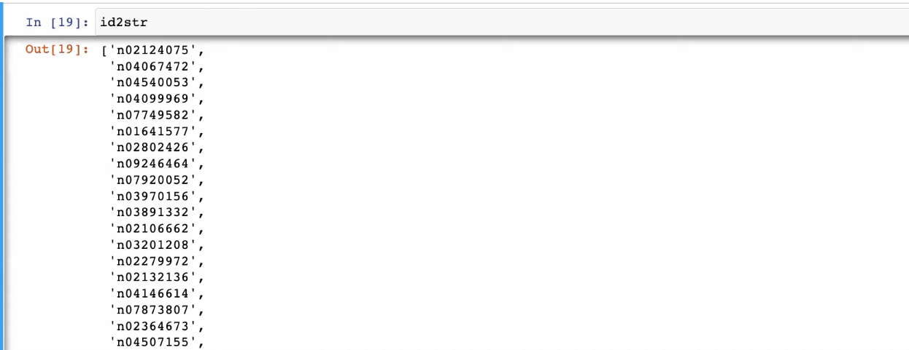
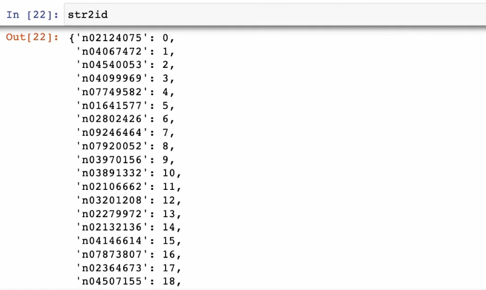
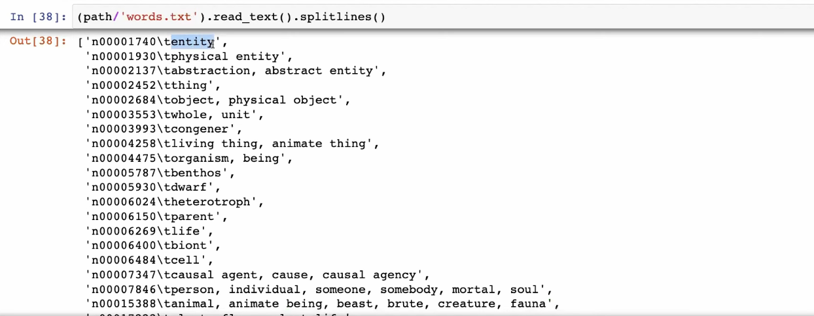

Tiny ImageNet Classification¶
Complete Beginner's Guide¶
This notebook trains image classifiers on Tiny ImageNet - a smaller version of the famous ImageNet dataset. We'll build increasingly sophisticated models and learn important techniques for training vision models.
What You'll Learn¶
- Tiny ImageNet Dataset: Loading and processing 64x64 images with 200 classes
- Custom Dataset Classes: Building PyTorch datasets from scratch
- Image Normalization: Why and how to normalize images
- Data Augmentation: Techniques to improve generalization
- ResNet Architecture: Building residual networks from scratch
- Training Techniques: Learning rate finding, OneCycleLR, mixed precision
Prerequisites¶
- Basic Python and PyTorch knowledge
- Understanding of neural networks and CNNs
Tiny ImageNet vs Full ImageNet¶
| Aspect | Tiny ImageNet | Full ImageNet |
|---|---|---|
| Image size | 64x64 | 224x224+ |
| Classes | 200 | 1000 |
| Training images | 100,000 | 1.2 million |
| Validation images | 10,000 | 50,000 |
| Download size | ~400 MB | ~150 GB |
Setup and Imports¶
# Select GPU
import os
os.environ['CUDA_VISIBLE_DEVICES'] = '2'
# Main imports
import shutil, timm, os, torch, random, datasets, math
import fastcore.all as fc
import numpy as np
import matplotlib as mpl
import matplotlib.pyplot as plt
import k_diffusion as K
import torchvision.transforms as T
import torchvision.transforms.functional as TF
import torch.nn.functional as F
from torch.utils.data import DataLoader, default_collate
from pathlib import Path
from torch.nn import init
from fastcore.foundation import L
from torch import nn, tensor
from operator import itemgetter
from torcheval.metrics import MulticlassAccuracy
from functools import partial
from torch.optim import lr_scheduler
from torch import optim
from torchvision.io import read_image, ImageReadMode # Fast image loading
from glob import glob # File pattern matching
# miniai modules
from miniai.datasets import *
from miniai.conv import *
from miniai.learner import *
from miniai.activations import *
from miniai.init import *
from miniai.sgd import *
from miniai.resnet import *
from miniai.augment import *
from miniai.accel import *
from miniai.training import *
from fastprogress import progress_bar
# Configure display
torch.set_printoptions(precision=5, linewidth=140, sci_mode=False)
torch.manual_seed(1)
mpl.rcParams['figure.dpi'] = 70
set_seed(42)
if fc.defaults.cpus > 8:
fc.defaults.cpus = 8
# Create data directory
path_data = Path('data')
path_data.mkdir(exist_ok=True)
# Path to Tiny ImageNet
path = path_data / 'tiny-imagenet-200'
# Download if not already present
url = 'http://cs231n.stanford.edu/tiny-imagenet-200.zip'
if not path.exists():
# Download the zip file
path_zip = fc.urlsave(url, path_data)
# Extract it
shutil.unpack_archive('data/tiny-imagenet-200.zip', 'data')
Dataset structure:
tiny-imagenet-200/
├── train/
│ ├── n01443537/ # Class folder (WordNet ID)
│ │ ├── images/
│ │ │ ├── n01443537_0.JPEG
│ │ │ └── ...
│ │ └── n01443537_boxes.txt
│ └── ... (200 class folders)
├── val/
│ ├── images/
│ │ ├── val_0.JPEG
│ │ └── ...
│ └── val_annotations.txt # Maps filenames to classes
├── wnids.txt # List of 200 WordNet IDs
└── words.txt # WordNet ID to human-readable name
# Batch size
bs = 512
Creating Custom Dataset Classes¶
PyTorch datasets need two methods:
__len__: Return the number of samples__getitem__: Return a single sample by index
class TinyDS:
"""
Dataset for Tiny ImageNet training data.
Training images are organized by class folder:
train/n01443537/images/n01443537_0.JPEG
↑
class ID (parent.parent of image)
"""
def __init__(self, path):
self.path = Path(path)
# Find all JPEG files recursively
# glob('**/*.JPEG', recursive=True) finds all .JPEG files in all subdirectories
self.files = glob(str(path / '**/*.JPEG'), recursive=True)
def __len__(self):
return len(self.files)
def __getitem__(self, i):
filepath = self.files[i]
# Extract class from path: .../train/n01443537/images/file.JPEG
# parent = images folder, parent.parent = class folder
class_id = Path(filepath).parent.parent.name
return filepath, class_id
# Create training dataset
tds = TinyDS(path / 'train')
# Test it
tds[0]
Returns a tuple of (filepath, class_id). The class_id is a WordNet ID like 'n04560804'.
Validation Dataset¶
The validation set has a different structure - all images in one folder with annotations in a text file.
# Load validation annotations
# Format: filename \t class_id \t bbox_info...
path_anno = path / 'val' / 'val_annotations.txt'
# Create a dictionary: filename -> class_id
anno = dict(
o.split('\t')[:2] # Split by tab, take first 2 elements
for o in path_anno.read_text().splitlines()
)
class TinyValDS(TinyDS):
"""
Dataset for Tiny ImageNet validation data.
Validation images are all in one folder, so we need to look up
the class from the annotations file.
"""
def __getitem__(self, i):
filepath = self.files[i]
# Get filename (e.g., 'val_4619.JPEG')
filename = os.path.basename(filepath)
# Look up class from annotations dictionary
class_id = anno[filename]
return filepath, class_id
# Create validation dataset
vds = TinyValDS(path / 'val')
# Test it
vds[0]
# Check dataset sizes
print(f"Training samples: {len(tds):,}")
print(f"Validation samples: {len(vds):,}")
Transform Dataset Wrapper¶
A flexible wrapper that applies transforms to both x (image) and y (label).
class TfmDS:
"""
Wrapper that applies transforms to a dataset.
Args:
ds: Base dataset
tfmx: Transform for x (images)
tfmy: Transform for y (labels)
"""
def __init__(self, ds, tfmx=fc.noop, tfmy=fc.noop):
self.ds = ds
self.tfmx = tfmx # Transform for x
self.tfmy = tfmy # Transform for y
def __len__(self):
return len(self.ds)
def __getitem__(self, i):
x, y = self.ds[i]
return self.tfmx(x), self.tfmy(y)
fc.noop is a function that does nothing (returns its input unchanged). It's the default when no transform is specified.
# Load the list of 200 WordNet IDs
id2str = (path / 'wnids.txt').read_text().splitlines()
# Create reverse mapping: string -> integer index
str2id = {v: k for k, v in enumerate(id2str)}
print(f"Number of classes: {len(id2str)}")
print(f"First 5 classes: {id2str[:5]}")

len(id2str)
200

Image Normalization¶
Neural networks work better when inputs have zero mean and unit variance. We compute the mean and std of the dataset and use them to normalize.
# Pre-computed mean and std for Tiny ImageNet
# These were computed over the entire training set
xmean = tensor([0.47565, 0.40303, 0.31555]) # RGB means
xstd = tensor([0.28858, 0.24402, 0.26615]) # RGB stds
Why normalize?
- Faster convergence: Gradients are more balanced
- Better optimization: Helps avoid getting stuck in local minima
- Consistent scale: All features have similar magnitude
def tfmx(x):
"""
Transform for images:
1. Load image as RGB tensor
2. Scale to [0, 1]
3. Normalize by mean and std
Args:
x: File path string
Returns:
Normalized tensor of shape (3, 64, 64)
"""
# Read image as RGB tensor (values 0-255)
img = read_image(x, mode=ImageReadMode.RGB)
# Convert to float and scale to [0, 1]
img = img / 255
# Normalize: (x - mean) / std
# [:,None,None] adds dimensions for broadcasting with image
return (img - xmean[:, None, None]) / xstd[:, None, None]
How Channel-Wise Normalization Works via Broadcasting¶
The Shapes¶
After img = read_image(...) and dividing by 255, img has shape (3, 64, 64) — that's (channels, height, width).
xmean starts as shape (3,) — just a flat 1D tensor with three values:
[0.4757, 0.4030, 0.3156]
The Reshape: xmean[:, None, None]¶
When you do xmean[:, None, None], you reshape it from (3,) to (3, 1, 1):
[[[0.4757]],
[[0.4030]],
[[0.3156]]]
Broadcasting in Action¶
When you subtract a (3, 1, 1) tensor from a (3, 64, 64) tensor, PyTorch's broadcasting kicks in — the 1s automatically expand to match the larger dimensions. So effectively:
- The red channel mean (
0.4757) gets subtracted from every pixel in the red channel (all 64×64 values) - The green channel mean (
0.4030) gets subtracted from every pixel in the green channel - The blue channel mean (
0.3156) gets subtracted from every pixel in the blue channel
The same thing happens with xstd[:, None, None] for the division.
Summary¶
The last line:
(img - xmean[:, None, None]) / xstd[:, None, None]
normalizes each channel independently using its own mean and std, applied uniformly across all spatial positions (height and width).
def tfmy(y):
"""
Transform for labels:
Convert WordNet ID string to integer tensor.
Args:
y: WordNet ID string (e.g., 'n01443537')
Returns:
Integer tensor (class index 0-199)
"""
return tensor(str2id[y])
# Create transformed datasets
tfm_tds = TfmDS(tds, tfmx, tfmy)
tfm_vds = TfmDS(vds, tfmx, tfmy)
# Test the transforms
xi, yi = tfm_tds[0]
print(f"Image shape: {xi.shape}")
print(f"Label: {yi} -> {id2str[yi]}")
def denorm(x):
"""
Reverse normalization for visualization.
Args:
x: Normalized tensor
Returns:
Tensor in [0, 1] range for display
"""
# Reverse: x_orig = x * std + mean
result = x * xstd[:, None, None] + xmean[:, None, None]
# Clip to valid range
return result.clip(0, 1)
# Display an image
show_image(denorm(xi));
Creating DataLoaders¶
# Create training DataLoader
dltrn = DataLoader(
tfm_tds,
batch_size=bs,
shuffle=True, # Shuffle training data
num_workers=8 # Parallel data loading
)
# Get a batch
xb, yb = b = next(iter(dltrn))
print(f"Batch shape: {xb.shape}")
# Display first image in batch
show_image(denorm(xb[0]));

# Load all synset (WordNet) names
all_synsets = [o.split('\t') for o in (path / 'words.txt').read_text().splitlines()]
# Create dictionary: WordNet ID -> human name
# Only include IDs that are in our 200 classes
# Split by comma and take first part (primary name)
synsets = {
k: v.split(',', maxsplit=1)[0] # Take first name before comma
for k, v in all_synsets
if k in id2str
}
Result of synsets¶
synsets will be a dictionary with 200 entries — one for each class in Tiny ImageNet — mapping the WordNet ID to its primary human-readable name. It would look something like:
{
'n02124075': 'Egyptian cat',
'n04067472': 'reel',
'n04540053': 'volleyball',
'n04099969': 'rocking chair',
'n07749582': 'lemon',
'n01641577': 'bullfrog',
'n02802426': 'basketball',
'n09246464': 'cliff',
'n07920052': 'espresso',
'n03970156': 'plunger',
'n03891332': 'parking meter',
'n02106662': 'German shepherd',
'n03201208': 'dining table',
'n02279972': 'monarch',
'n02132136': 'brown bear',
'n04146614': 'school bus',
'n07873807': 'pizza',
'n02364673': 'guinea pig',
'n04507155': 'umbrella',
... # 200 entries total
}
What Happened Step by Step¶
all_synsetscontains every synset fromwords.txt(tens of thousands of entries)- The
if k in id2strfilter keeps only the 200 IDs that appear inid2str v.split(',', maxsplit=1)[0]trims multi-word synonyms to just the first name
Purpose¶
synsets acts as a lookup table to convert cryptic IDs like 'n07873807' into readable labels like 'pizza'.
Understanding all_synsets and synsets¶
What all_synsets Contains¶
Each line in words.txt looks like:
n00001740\tentity
n00001930\tphysical entity
n00002137\tabstraction, abstract entity
The \t is a tab character separating the WordNet ID from the human-readable name.
When you do o.split('\t'), each line gets split at the tab into a list of two elements. So all_synsets becomes a list of lists like:
[
['n00001740', 'entity'],
['n00001930', 'physical entity'],
['n00002137', 'abstraction, abstract entity'],
['n00002452', 'thing'],
['n00002684', 'object, physical object'],
['n00003553', 'whole, unit'],
...
]
Each inner list has two items: the WordNet ID (e.g., 'n00001740') and the synset name(s) (e.g., 'abstraction, abstract entity').
How synsets Is Built¶
synsets = {
k: v.split(',', maxsplit=1)[0]
for k, v in all_synsets
if k in id2str
}
This is a dictionary comprehension that processes all_synsets in three steps:
1. Unpacking: for k, v in all_synsets¶
Each inner list like ['n00002137', 'abstraction, abstract entity'] gets unpacked into:
k='n00002137'(the WordNet ID)v='abstraction, abstract entity'(the full name string)
2. Filtering: if k in id2str¶
all_synsets contains every WordNet synset (tens of thousands), but our Tiny ImageNet dataset only uses 200 classes. The id2str dictionary holds those 200 class IDs. This filter keeps only the synsets that are actually in our dataset.
For example, generic entries like 'entity', 'thing', 'physical object' would be skipped since they aren't among the 200 Tiny ImageNet classes.
3. Name Cleanup: v.split(',', maxsplit=1)[0]¶
Many synset names have multiple synonyms separated by commas. This takes only the first name before any comma.
Why maxsplit=1?¶
The maxsplit=1 parameter tells Python to split the string at most once — meaning it stops after finding the first comma. This produces a list of at most 2 elements: everything before the first comma, and everything after it.
For example, with 'person, individual, someone, somebody':
| Code | Result |
|---|---|
v.split(',') (no maxsplit) |
['person', ' individual', ' someone', ' somebody'] — 4 elements |
v.split(',', maxsplit=1) |
['person', ' individual, someone, somebody'] — 2 elements |
Since we only care about the first name ([0]), both approaches give the same final result. However, maxsplit=1 is more efficient — it tells Python to stop scanning the string after the first comma instead of unnecessarily splitting at every comma. When processing tens of thousands of synsets, this small optimization adds up.
Full Name (v) |
After Split ([0]) |
|---|---|
'abstraction, abstract entity' |
'abstraction' |
'object, physical object' |
'object' |
'person, individual, someone, somebody' |
'person' |
'entity' |
'entity' (no comma) |
Final Result¶
synsets ends up as a dictionary mapping only the 200 relevant WordNet IDs to their clean, primary names:
{
'n01443537': 'goldfish',
'n01629819': 'European fire salamander',
'n01910747': 'jellyfish',
...
}
# Create titles for batch
titles = [synsets[id2str[o]] for o in yb]
# Show first 20 class names
print(', '.join(titles[:20]))
# Display images with titles
show_images(denorm(xb[:9]), titles=titles[:9], imsize=2.5)
# Create DataLoaders object (combines train and val)
dls = DataLoaders(*get_dls(tfm_tds, tfm_vds, bs=bs, num_workers=8))
Understanding get_dls() and DataLoaders¶
The get_dls() Function Definition¶
From the miniai library (source):
def get_dls(train_ds, valid_ds, bs, **kwargs):
return (DataLoader(train_ds, batch_size=bs, shuffle=True, **kwargs),
DataLoader(valid_ds, batch_size=bs*2, **kwargs))
What It Does¶
This function takes a training dataset and a validation dataset, and wraps each one in a PyTorch DataLoader. It returns a tuple of two DataLoaders:
| DataLoader | Batch Size | Shuffle | Purpose |
|---|---|---|---|
| Training | bs |
True |
Randomizes order each epoch to improve generalization |
| Validation | bs * 2 |
False (default) |
No shuffling needed; double batch size since no gradients are stored during validation, so more memory is available |
The **kwargs captures any additional keyword arguments and passes them through to both DataLoaders. In our case, num_workers=8 gets captured by **kwargs.
How num_workers=8 Flows Through¶
When we call:
get_dls(tfm_tds, tfm_vds, bs=bs, num_workers=8)
Inside the function, the parameters are assigned as:
| Parameter | Value |
|---|---|
train_ds |
tfm_tds |
valid_ds |
tfm_vds |
bs |
bs (e.g., 256) |
**kwargs |
{'num_workers': 8} |
Then **kwargs gets unpacked into both DataLoader calls, so the function effectively runs:
return (DataLoader(tfm_tds, batch_size=256, shuffle=True, num_workers=8),
DataLoader(tfm_vds, batch_size=512, shuffle=False, num_workers=8))
What num_workers=8 Does¶
num_workers controls how many parallel subprocesses are used to load and preprocess data in the background while the GPU is training on the current batch. With num_workers=8:
- 8 worker processes run in parallel, each loading and transforming batches ahead of time
- The next batch is ready and waiting by the time the GPU finishes the current one
- This prevents the GPU from sitting idle while data is being loaded from disk
- Without it (
num_workers=0), data loading happens in the main process sequentially, creating a bottleneck where the GPU waits for each batch to be loaded and transformed
How the Full Line Works¶
dls = DataLoaders(*get_dls(tfm_tds, tfm_vds, bs=bs, num_workers=8))
This happens in three steps:
Step 1: get_dls(tfm_tds, tfm_vds, bs=bs, num_workers=8)¶
Calls the function with:
tfm_tds— the transformed training datasettfm_vds— the transformed validation datasetbs=bs— the batch sizenum_workers=8— passed via**kwargsto use 8 parallel workers for data loading
This returns a tuple of two DataLoaders:
(train_dataloader, valid_dataloader)
Step 2: The * (Unpacking Operator)¶
The * before get_dls(...) unpacks the tuple into separate positional arguments. So:
DataLoaders(*get_dls(...))
is equivalent to:
DataLoaders(train_dataloader, valid_dataloader)
Without the *, you would be passing a single tuple as one argument, which is not what DataLoaders expects. The * spreads the tuple into two separate arguments.
Step 3: DataLoaders(...)¶
The DataLoaders class (from fastai/miniai) takes the two individual DataLoaders and bundles them into a single object. This object provides convenient access to both:
dls.train— the training DataLoaderdls.valid— the validation DataLoader
Summary¶
The entire line creates a unified DataLoaders object that holds both the training and validation DataLoaders, with the training loader shuffled and using batch size bs, and the validation loader unshuffled with double the batch size (bs * 2), both using 8 parallel workers for efficient data loading.
Interactive: ResNet architecture flow on Tiny ImageNet
Tensor shapes propagating through a small ResNet, stage by stage. Hover each stage to see its layer details. Notice the pattern: spatial size halves at every stride-2 conv, channels double. The total parameter count is the sum of each block's conv weights.
Basic Model¶
Now let's build a CNN classifier using ResNet blocks.
Data Augmentation¶
Augmentation creates variations of training images to improve generalization.
def tfm_batch(b, tfm_x=fc.noop, tfm_y=fc.noop):
"""
Apply transforms to a batch.
Args:
b: Tuple of (inputs, targets)
tfm_x: Transform for inputs
tfm_y: Transform for targets
Returns:
Transformed (inputs, targets)
"""
return tfm_x(b[0]), tfm_y(b[1])
Understanding tfm_batch and Batch Indexing¶
The Code in Question¶
def tfm_batch(b, tfm_x=fc.noop, tfm_y=fc.noop):
"""
Apply transforms to a batch.
Args:
b: Tuple of (inputs, targets)
tfm_x: Transform for inputs
tfm_y: Transform for targets
Returns:
Transformed (inputs, targets)
"""
return tfm_x(b[0]), tfm_y(b[1])
Why Index b[0] and b[1]?¶
In PyTorch, a batch from a DataLoader is a tuple containing two elements:
| Index | Content | Description |
|---|---|---|
b[0] |
Inputs (images) | The data we feed into the model |
b[1] |
Targets (labels) | The ground truth labels |
This is the standard PyTorch convention. The DataLoader collects samples and returns them as (inputs, targets).
Example from the Notebook¶
From the notebook, we can see this unpacking:
# Get a batch from the DataLoader
xb, yb = b = next(iter(dltrn))
This is equivalent to:
b = next(iter(dltrn)) # b is a tuple: (inputs, targets)
xb = b[0] # inputs (images)
yb = b[1] # targets (labels)
Sizes of b[0] and b[1]¶
Based on the notebook configuration:
- Batch size:
bs = 512 - Image size: 64×64 pixels, 3 color channels (RGB)
- Number of classes: 200 (Tiny ImageNet)
b[0] - Input Images¶
Shape: [512, 3, 64, 64]
│ │ │ │
│ │ │ └── Width (64 pixels)
│ │ └────── Height (64 pixels)
│ └────────── Channels (3 = RGB)
└─────────────── Batch size (512 images)
b[1] - Target Labels¶
Shape: [512]
│
└── Batch size (512 labels, one per image)
Each label is an integer from 0 to 199, representing one of the 200 Tiny ImageNet classes.
Visual Example¶
Batch b = (inputs, targets)
b[0] (inputs): b[1] (targets):
┌─────────────────────┐ ┌─────────────┐
│ Image 0: [3,64,64] │ │ Label 0: 42 │ (e.g., "golden retriever")
│ Image 1: [3,64,64] │ │ Label 1: 15 │ (e.g., "tabby cat")
│ Image 2: [3,64,64] │ │ Label 2: 99 │ (e.g., "sports car")
│ ... │ │ ... │
│ Image 511: [3,64,64]│ │ Label 511: 7│ (e.g., "banana")
└─────────────────────┘ └─────────────┘
Total shape: [512, 3, 64, 64] Total shape: [512]
How tfm_batch Is Used¶
In the notebook, it's used with augmentation transforms:
# Define augmentation transforms for images
tfms = nn.Sequential(
T.Pad(4), # Pad 4 pixels on each side
T.RandomCrop(64), # Random crop back to 64x64
T.RandomHorizontalFlip(), # 50% chance of flip
RandErase() # Randomly erase a rectangle
)
# Create callback - only transform inputs (tfm_x), not labels (tfm_y)
augcb = BatchTransformCB(partial(tfm_batch, tfm_x=tfms), on_val=False)
tfm_x=tfmsapplies augmentation to the images (b[0])tfm_y=fc.noopdoes nothing to the labels (b[1]) — labels don't need augmentation!
# Define augmentation transforms
tfms = nn.Sequential(
T.Pad(4), # Pad 4 pixels on each side (64 -> 72)
T.RandomCrop(64), # Random crop back to 64x64
T.RandomHorizontalFlip(), # 50% chance of horizontal flip
RandErase() # Randomly erase a rectangle
)
# Create callback for batch augmentation
# on_val=False means don't augment validation data
augcb = BatchTransformCB(partial(tfm_batch, tfm_x=tfms), on_val=False)
Augmentation pipeline:
Original 64x64 image
↓
Pad(4) → 72x72 image (4 pixels added on each side)
↓
RandomCrop(64) → 64x64 (random position)
↓
RandomHorizontalFlip → 50% chance flipped
↓
RandErase → Random rectangle set to mean color
This teaches the model to be robust to:
- Small translations (from padding + crop)
- Left-right orientation (from flip)
- Occlusions (from random erase)
What is T in the Code?¶
The Import Statement¶
import torchvision.transforms as T
T is an alias for torchvision.transforms — PyTorch's image transformation library.
Why Use an Alias?¶
It's just a shorter way to write the code. Instead of typing the full module name every time:
With Alias (T) |
Without Alias |
|---|---|
T.Pad(4) |
torchvision.transforms.Pad(4) |
T.RandomCrop(64) |
torchvision.transforms.RandomCrop(64) |
T.RandomHorizontalFlip() |
torchvision.transforms.RandomHorizontalFlip() |
Example from the Notebook¶
tfms = nn.Sequential(
T.Pad(4), # = torchvision.transforms.Pad(4)
T.RandomCrop(64), # = torchvision.transforms.RandomCrop(64)
T.RandomHorizontalFlip(), # = torchvision.transforms.RandomHorizontalFlip()
RandErase()
)
Common PyTorch Aliases¶
Using short aliases is a common convention in PyTorch code:
| Alias | Full Module |
|---|---|
T |
torchvision.transforms |
F |
torch.nn.functional |
nn |
torch.nn |
np |
numpy |
TF |
torchvision.transforms.functional |
These aliases keep code concise and readable.
Model Architecture¶
# Activation function: Leaky ReLU with negative slope 0.1, shifted down by 0.4
act_gr = partial(GeneralRelu, leak=0.1, sub=0.4)
# Weight initialization for leaky ReLU
iw = partial(init_weights, leaky=0.1)
GeneralRelu:
Standard ReLU: f(x) = max(0, x)
Leaky ReLU: f(x) = max(leak*x, x) where leak=0.1
GeneralRelu: f(x) = max(leak*x, x) - sub where sub=0.4
The subtraction keeps activations centered around 0.
# Number of filters at each stage
nfs = (32, 64, 128, 256, 512, 1024)
def get_dropmodel(act=act_gr, nfs=nfs, norm=nn.BatchNorm2d, drop=0.1):
"""
Create a ResNet-style classifier for Tiny ImageNet.
Architecture:
- Initial 5x5 conv
- 5 ResNet blocks with stride 2 (downsampling)
- Global average pooling
- Dropout
- Linear layer to 200 classes
Args:
act: Activation function
nfs: Tuple of filter counts at each stage
norm: Normalization layer type
drop: Dropout probability
Returns:
nn.Sequential model
"""
layers = []
# Initial convolution: 3 -> 32 channels, 5x5 kernel
layers.append(nn.Conv2d(3, nfs[0], 5, padding=2))
# ResNet blocks with stride 2
# Each block: nfs[i] -> nfs[i+1], spatial dimension halved
layers += [
ResBlock(nfs[i], nfs[i+1], act=act, norm=norm, stride=2)
for i in range(len(nfs) - 1)
]
# Global average pooling: (N, C, H, W) -> (N, C, 1, 1)
layers.append(nn.AdaptiveAvgPool2d(1))
# Flatten: (N, C, 1, 1) -> (N, C)
layers.append(nn.Flatten())
# Dropout for regularization
layers.append(nn.Dropout(drop))
# Classification head: 1024 -> 200 classes
# bias=False because followed by BatchNorm
layers.append(nn.Linear(nfs[-1], 200, bias=False))
layers.append(nn.BatchNorm1d(200))
# Apply weight initialization and return
return nn.Sequential(*layers).apply(iw)
Understanding Dimensional Alignment in the CNN Architecture¶
The Question¶
How does this line:
layers += [nn.AdaptiveAvgPool2d(1), nn.Flatten(), nn.Dropout(drop)]
produce output that aligns with:
layers += [nn.Linear(nfs[-1], 200, bias=False), nn.BatchNorm1d(200)]
where nfs[-1] = 1024?
The Key: AdaptiveAvgPool2d(1)¶
The magic happens with nn.AdaptiveAvgPool2d(1). This layer takes any spatial input and reduces it to a 1×1 spatial output, preserving the channel dimension.
Step-by-Step Dimension Tracking¶
After the ResBlocks¶
| Layer | Output Shape |
|---|---|
| Input images (Tiny ImageNet) | (batch, 3, 64, 64) |
Conv2d(3, 32, 5, padding=2) |
(batch, 32, 64, 64) |
ResBlock(32→64, stride=2) |
(batch, 64, 32, 32) |
ResBlock(64→128, stride=2) |
(batch, 128, 16, 16) |
ResBlock(128→256, stride=2) |
(batch, 256, 8, 8) |
ResBlock(256→512, stride=2) |
(batch, 512, 4, 4) |
ResBlock(512→1024, stride=2) |
(batch, 1024, 2, 2) |
The Pooling and Flatten Layers¶
(batch, 1024, 2, 2)
↓
nn.AdaptiveAvgPool2d(1) → (batch, 1024, 1, 1) # Averages spatial dims to 1×1
↓
nn.Flatten() → (batch, 1024) # Removes the 1×1 spatial dims
↓
nn.Dropout(drop) → (batch, 1024) # No shape change
↓
nn.Linear(1024, 200) → (batch, 200) # 1024 input features → 200 classes
↓
nn.BatchNorm1d(200) → (batch, 200) # No shape change
Why AdaptiveAvgPool2d(1) is Brilliant¶
Unlike regular pooling where you specify kernel size, Adaptive pooling specifies the output size.
| Pooling Type | You Specify | Behavior |
|---|---|---|
AvgPool2d(kernel_size=2) |
Kernel size | Output size depends on input |
AdaptiveAvgPool2d(1) |
Output size | Kernel adapts to input |
So AdaptiveAvgPool2d(1) says: "Give me a 1×1 spatial output, no matter what the input size is."
What This Means:¶
- Number of channels (1024) is preserved
- Spatial dimensions (whatever they are) get averaged into a single value per channel
- After flattening: you get exactly 1024 features — matching
nfs[-1]
Visual Diagram¶
SPATIAL DIMENSIONS
─────────────────→
┌─────────────────────────────────────┐
│ After ResBlocks │
│ Shape: (batch, 1024, 2, 2) │
│ │
│ ┌───┬───┐ │
│ │ a │ b │ × 1024 channels │
│ ├───┼───┤ │
│ │ c │ d │ │
│ └───┴───┘ │
└─────────────────────────────────────┘
│
▼
┌─────────────────────────────────────┐
│ AdaptiveAvgPool2d(1) │
│ Shape: (batch, 1024, 1, 1) │
│ │
│ ┌─────┐ │
│ │(a+b │ × 1024 channels │
│ │+c+d)│ (averaged) │
│ │ /4 │ │
│ └─────┘ │
└─────────────────────────────────────┘
│
▼
┌─────────────────────────────────────┐
│ Flatten() │
│ Shape: (batch, 1024) │
│ │
│ [v₁, v₂, v₃, ... , v₁₀₂₄] │
│ │
└─────────────────────────────────────┘
│
▼
┌─────────────────────────────────────┐
│ Linear(1024, 200) │
│ Shape: (batch, 200) │
│ │
│ [c₁, c₂, c₃, ... , c₂₀₀] │
│ (200 class logits) │
└─────────────────────────────────────┘
Why This Design Pattern is Common¶
This architecture pattern is used because:
- Flexibility: You can change
nfsvalues or input image sizes and the architecture still works - Global context: Adaptive pooling captures global information from the entire feature map
- Fixed output: Bridges variable spatial sizes to a fixed-size linear layer
- Efficiency: Dramatically reduces parameters compared to flattening directly
Code Reference¶
nfs = (32, 64, 128, 256, 512, 1024)
def get_dropmodel(act=act_gr, nfs=nfs, norm=nn.BatchNorm2d, drop=0.1):
layers = [nn.Conv2d(3, nfs[0], 5, padding=2)]
layers += [ResBlock(nfs[i], nfs[i+1], act=act, norm=norm, stride=2)
for i in range(len(nfs)-1)]
layers += [nn.AdaptiveAvgPool2d(1), nn.Flatten(), nn.Dropout(drop)]
layers += [nn.Linear(nfs[-1], 200, bias=False), nn.BatchNorm1d(200)]
return nn.Sequential(*layers).apply(iw)
The key insight: nfs[-1] (1024) in the Linear layer matches the number of channels output by the last ResBlock, which is preserved through AdaptiveAvgPool2d and Flatten.
Understanding Conv2d: A Complete Explanation¶
The Question¶
nn.Conv2d(3, 32, 5, padding=2)
Input shape: (batch, 3, 64, 64) → Output shape: (batch, 32, 64, 64)
- How does the channel dimension change from 3 to 32?
- What happens with the kernel?
- How does convolution actually work?
Conv2d Parameters Explained¶
nn.Conv2d(in_channels, out_channels, kernel_size, padding)
nn.Conv2d(3, 32, 5, 2)
| Parameter | Value | Meaning |
|---|---|---|
in_channels |
3 | Number of input channels (RGB) |
out_channels |
32 | Number of output channels (filters) |
kernel_size |
5 | Size of each filter (5×5) |
padding |
2 | Zeros added around the input |
Quick Summary: 32 Filters, Each (3, 5, 5)¶
nn.Conv2d(3, 32, 5, padding=2)
│ │ │
│ │ └── kernel_size = 5×5
│ └───── 32 filters (out_channels)
└──────── each filter has 3 channels (in_channels)
So this means: 32 filters and each has a shape of (3, 5, 5)
conv = nn.Conv2d(3, 32, 5, padding=2)
print(conv.weight.shape) # torch.Size([32, 3, 5, 5])
conv.weight.shape = (32, 3, 5, 5)
│ │ └──┴── 5×5 spatial kernel
│ └──────── 3 channels per filter (matches input RGB)
└──────────── 32 filters
Visual Summary of the 32 Filters¶
32 FILTERS
┌─────────────────────────────────────────────────────┐
│ │
│ Filter 0: (3, 5, 5) ──→ Output Channel 0 │
│ Filter 1: (3, 5, 5) ──→ Output Channel 1 │
│ Filter 2: (3, 5, 5) ──→ Output Channel 2 │
│ ... ... ... │
│ Filter 31: (3, 5, 5) ──→ Output Channel 31 │
│ │
└─────────────────────────────────────────────────────┘
Each filter (3, 5, 5) means:
├── 3: covers all RGB channels simultaneously
└── 5×5: the spatial window size
Parameter Count¶
| Component | Count |
|---|---|
| Weights | 32 × 3 × 5 × 5 = 2,400 |
| Biases | 32 (one per filter) |
| Total | 2,432 |
The Key Insight: 32 Separate Filters¶
Conv2d creates 32 independent filters, each producing one output channel.
32 FILTERS
┌──────────────────────────┐
│ │
Input │ Filter 1 → Channel 1 │ Output
(3, 64, 64) │ Filter 2 → Channel 2 │ (32, 64, 64)
│ │ Filter 3 → Channel 3 │ │
│ │ ... │ │
└─────→│ Filter 32 → Channel 32 │────────┘
│ │
└──────────────────────────┘
Each filter:
- Has shape
(3, 5, 5)— covers ALL input channels with a 5×5 window - Produces ONE output channel of shape
(64, 64)
What is a Filter/Kernel?¶
A filter is a small learnable weight matrix that slides across the input.
Single Filter Structure for RGB Input¶
Filter shape: (in_channels, kernel_height, kernel_width) = (3, 5, 5)
┌─────────────────┐
│ Red weights │ 5×5 = 25 weights
│ (5×5 matrix) │
├─────────────────┤
│ Green weights │ 5×5 = 25 weights
│ (5×5 matrix) │
├─────────────────┤
│ Blue weights │ 5×5 = 25 weights
│ (5×5 matrix) │
└─────────────────┘
+
1 bias term
Total per filter: 3×5×5 + 1 = 76 parameters
Total for 32 filters: 32 × 76 = 2,432 parameters
How Convolution Works: Step by Step¶
Step 1: Position the Filter¶
The 5×5 filter is placed at a position on the input image.
Input Image (one channel shown, but applies to all 3)
┌─────────────────────────────────┐
│ │
│ ┌─────────┐ │
│ │ ■ ■ ■ ■ ■│ ← 5×5 filter │
│ │ ■ ■ ■ ■ ■│ window │
│ │ ■ ■ ■ ■ ■│ │
│ │ ■ ■ ■ ■ ■│ │
│ │ ■ ■ ■ ■ ■│ │
│ └─────────┘ │
│ │
│ 64×64 │
└─────────────────────────────────┘
Step 2: Multiply and Sum¶
For EACH position, the filter:
- Multiplies each weight by the corresponding pixel value
- Sums all products across ALL 3 channels
- Adds the bias
- Produces ONE output number
For one position:
Red Channel Red Weights
┌───────────┐ ┌───────────┐
│ p₁ p₂ ... │ × │ w₁ w₂ ... │ = sum_red
└───────────┘ └───────────┘
+
Green Channel Green Weights
┌───────────┐ ┌───────────┐
│ p₁ p₂ ... │ × │ w₁ w₂ ... │ = sum_green
└───────────┘ └───────────┘
+
Blue Channel Blue Weights
┌───────────┐ ┌───────────┐
│ p₁ p₂ ... │ × │ w₁ w₂ ... │ = sum_blue
└───────────┘ └───────────┘
+
bias
=
ONE OUTPUT VALUE
Step 3: Slide the Filter¶
The filter slides across the entire image (with stride=1, moving 1 pixel at a time).
Position 1 Position 2 Position 3
┌─────┬─────┐ ┌─────┬─────┐ ┌─────┬─────┐
│■■■■■│ │ │ ■■■■■│ │ │ ■■■■■│ │
│■■■■■│ │ → │ ■■■■■│ │ → │ ■■■■■│ │ → ...
│■■■■■│ │ │ ■■■■■│ │ │ ■■■■■│ │
└─────┴─────┘ └─────┴─────┘ └─────┴─────┘
↓ ↓ ↓
Output[0,0] Output[0,1] Output[0,2]
Step 4: One Filter → One Channel¶
After sliding across the entire 64×64 input, ONE filter produces ONE 64×64 output channel.
ONE FILTER (3, 5, 5)
│
▼
Input ─────────────────────→ Output
(3, 64, 64) (1, 64, 64)
↑
One channel!
Step 5: 32 Filters → 32 Channels¶
All 32 filters process the input independently and in parallel:
Filter 1 ──→ Channel 1 (64×64)
Filter 2 ──→ Channel 2 (64×64)
Input (3, 64, 64) ──→ Filter 3 ──→ Channel 3 (64×64)
... ...
Filter 32 ──→ Channel 32 (64×64)
Stack all channels
│
▼
Output (32, 64, 64)
Concrete Example with Numbers¶
Let's use a tiny example: Conv2d(2, 3, 2) (2 input channels, 3 output channels, 2×2 kernel)
Input: 2 channels, 3×3 spatial¶
Channel 0: Channel 1:
┌───┬───┬───┐ ┌───┬───┬───┐
│ 1 │ 2 │ 3 │ │ 0 │ 1 │ 0 │
├───┼───┼───┤ ├───┼───┼───┤
│ 4 │ 5 │ 6 │ │ 1 │ 0 │ 1 │
├───┼───┼───┤ ├───┼───┼───┤
│ 7 │ 8 │ 9 │ │ 0 │ 1 │ 0 │
└───┴───┴───┘ └───┴───┴───┘
Input shape: (1, 2, 3, 3) [batch=1, channels=2, height=3, width=3]
Filters: 3 filters, each (2, 2, 2)¶
Filter 0: Filter 1: Filter 2:
Ch0: Ch1: Ch0: Ch1: Ch0: Ch1:
┌───┬───┐ ┌───┬───┐ ┌───┬───┐ ┌───┬───┐ ┌───┬───┐ ┌───┬───┐
│ 1 │ 0 │ │ 0 │ 1 │ │ 1 │ 1 │ │ 1 │ 1 │ │-1 │ 1 │ │ 1 │-1 │
├───┼───┤ ├───┼───┤ ├───┼───┤ ├───┼───┤ ├───┼───┤ ├───┼───┤
│ 0 │ 1 │ │ 1 │ 0 │ │ 1 │ 1 │ │ 1 │ 1 │ │ 1 │-1 │ │-1 │ 1 │
└───┴───┘ └───┴───┘ └───┴───┘ └───┴───┘ └───┴───┘ └───┴───┘
(bias=0) (bias=0) (bias=0)
Total weights shape: (3, 2, 2, 2) [out_channels=3, in_channels=2, H=2, W=2]
Computing Output[0, 0, 0] (Filter 0, position top-left)¶
Input window at (0,0):
Ch0: [1,2] Ch1: [0,1]
[4,5] [1,0]
Filter 0:
Ch0: [1,0] Ch1: [0,1]
[0,1] [1,0]
Computation:
Ch0: 1×1 + 2×0 + 4×0 + 5×1 = 1 + 0 + 0 + 5 = 6
Ch1: 0×0 + 1×1 + 1×1 + 0×0 = 0 + 1 + 1 + 0 = 2
Sum = 6 + 2 = 8
+ bias = 8 + 0 = 8
Output[0, 0, 0] = 8
Computing All Positions for Filter 0¶
Position (0,0): Position (0,1):
Ch0: 1×1+2×0+4×0+5×1 = 6 Ch0: 2×1+3×0+5×0+6×1 = 8
Ch1: 0×0+1×1+1×1+0×0 = 2 Ch1: 1×0+0×1+0×1+1×0 = 0
Total = 8 Total = 8
Position (1,0): Position (1,1):
Ch0: 4×1+5×0+7×0+8×1 = 12 Ch0: 5×1+6×0+8×0+9×1 = 14
Ch1: 1×0+0×1+0×1+1×0 = 0 Ch1: 0×0+1×1+1×1+0×0 = 2
Total = 12 Total = 16
Output Channel 0:
┌────┬────┐
│ 8 │ 8 │
├────┼────┤
│ 12 │ 16 │
└────┴────┘
Final Output: 3 channels (one per filter)¶
Channel 0 (Filter 0): Channel 1 (Filter 1): Channel 2 (Filter 2):
┌────┬────┐ ┌────┬────┐ ┌────┬────┐
│ 8 │ 8 │ │ 14 │ 16 │ │ 0 │ 0 │
├────┼────┤ ├────┼────┤ ├────┼────┤
│ 12 │ 16 │ │ 26 │ 30 │ │ 0 │ 0 │
└────┴────┘ └────┴────┘ └────┴────┘
Output shape: (1, 3, 2, 2) [batch=1, channels=3, height=2, width=2]
PyTorch Code to Verify¶
import torch
import torch.nn as nn
# Create input: (batch=1, channels=2, height=3, width=3)
input_tensor = torch.tensor([
[[1., 2., 3.],
[4., 5., 6.],
[7., 8., 9.]],
[[0., 1., 0.],
[1., 0., 1.],
[0., 1., 0.]]
]).unsqueeze(0) # Add batch dimension
print("Input shape:", input_tensor.shape) # torch.Size([1, 2, 3, 3])
# Create Conv2d layer
conv = nn.Conv2d(in_channels=2, out_channels=3, kernel_size=2, bias=False)
# Manually set weights (3 filters, each with 2 channels, 2×2)
with torch.no_grad():
# Filter 0
conv.weight[0, 0] = torch.tensor([[1., 0.], [0., 1.]])
conv.weight[0, 1] = torch.tensor([[0., 1.], [1., 0.]])
# Filter 1
conv.weight[1, 0] = torch.tensor([[1., 1.], [1., 1.]])
conv.weight[1, 1] = torch.tensor([[1., 1.], [1., 1.]])
# Filter 2
conv.weight[2, 0] = torch.tensor([[-1., 1.], [1., -1.]])
conv.weight[2, 1] = torch.tensor([[1., -1.], [-1., 1.]])
# Apply convolution
output = conv(input_tensor)
print("Output shape:", output.shape) # torch.Size([1, 3, 2, 2])
print("Output:\n", output)
Output:
Input shape: torch.Size([1, 2, 3, 3])
Output shape: torch.Size([1, 3, 2, 2])
Output:
tensor([[[[ 8., 8.],
[12., 16.]],
[[14., 16.],
[26., 30.]],
[[ 0., 0.],
[ 0., 0.]]]], grad_fn=<ConvolutionBackward0>)
Back to the Original Question¶
nn.Conv2d(3, 32, 5, padding=2)
| Component | Value | Explanation |
|---|---|---|
| Input channels | 3 | RGB image |
| Output channels | 32 | 32 separate filters, each producing one output channel |
| Kernel size | 5 | Each filter is 5×5 (actually 3×5×5 to cover all input channels) |
| Padding | 2 | Preserves spatial dimensions (64×64 → 64×64) |
Weight Tensor Shape¶
conv.weight.shape = (32, 3, 5, 5)
│ │ │ │
│ │ └──┴── Kernel spatial size (5×5)
│ └──────── Input channels (3 for RGB)
└──────────── Output channels (32 filters)
Total parameters: 32 × 3 × 5 × 5 = 2,400 weights
+ 32 biases = 2,432 total
Transformation Summary¶
Input: (batch, 3, 64, 64)
│
▼
┌─────────────────────┐
│ 32 FILTERS │
│ Each: (3, 5, 5) │
│ │
│ Filter processes │
│ ALL 3 channels │
│ simultaneously │
└─────────────────────┘
│
▼
Output: (batch, 32, 64, 64)
│
└── 32 because we have 32 filters,
each producing one channel
Key Takeaways¶
out_channels = number of filters — Each filter produces one output channel
Each filter spans ALL input channels — Filter shape is
(in_channels, kernel_h, kernel_w)Kernel size affects spatial dimensions — But padding can preserve them
Channels are transformed, not the kernel — The kernel size (5×5) determines the receptive field, not the output channels
The formula:
- Output channels = number of filters (parameter you choose)
- Output spatial size = depends on input size, kernel size, padding, stride
Network architecture:
Input: 3 x 64 x 64
↓ Conv 5x5
32 x 64 x 64
↓ ResBlock stride=2
64 x 32 x 32
↓ ResBlock stride=2
128 x 16 x 16
↓ ResBlock stride=2
256 x 8 x 8
↓ ResBlock stride=2
512 x 4 x 4
↓ ResBlock stride=2
1024 x 2 x 2
↓ AdaptiveAvgPool2d(1)
1024 x 1 x 1
↓ Flatten + Dropout
1024
↓ Linear + BatchNorm
200 (classes)
Complete Step-by-Step Explanation of nn.Sequential(*layers).apply(iw)¶
Overview¶
We need to understand how these pieces work together:
init_weights— A function that initializes weightspartial(init_weights, leaky=0.1)— Createsiwwith a pre-filled argumentnn.Sequential(*layers)— Creates the model.apply(iw)— Callsiwon every layer
Let's go through each step in detail.
Step 1: Understanding init_weights¶
def init_weights(m, leaky=0.1):
if isinstance(m, (nn.Conv1d, nn.Conv2d, nn.Conv3d)):
init.kaiming_normal_(m.weight)
What it does:
- Takes a layer
mas input - Checks: "Is this layer a Conv1d, Conv2d, or Conv3d?"
- If YES → Initialize its weights using Kaiming initialization
- If NO → Do nothing (skip this layer)
Simple Example:
# If we pass a Conv2d layer:
conv_layer = nn.Conv2d(3, 32, 5)
init_weights(conv_layer, leaky=0.1)
# ✓ It IS a Conv2d, so weights get initialized
# If we pass a Flatten layer:
flatten_layer = nn.Flatten()
init_weights(flatten_layer, leaky=0.1)
# ✗ It is NOT a Conv layer, so nothing happens
Step 2: Understanding Where Weights Are Stored¶
Before we go further, let's understand a fundamental concept: Where do weights live?
The Key Insight¶
Weights are stored INSIDE each layer object itself.
When you create a layer like nn.Conv2d(3, 32, 5), PyTorch automatically creates a .weight attribute inside that layer.
Let's See It in Action¶
import torch.nn as nn
# Create a Conv2d layer
conv = nn.Conv2d(3, 32, 5)
# The weights already exist INSIDE the layer!
print(conv.weight) # Shows the weight tensor
print(conv.weight.shape) # torch.Size([32, 3, 5, 5])
Output:
tensor([[[[ 0.0231, -0.0156, ...], ...]]]) # Random initial values
torch.Size([32, 3, 5, 5])
What Happens During Initialization¶
# BEFORE initialization
print(conv.weight[0, 0, 0, 0]) # e.g., 0.0231 (PyTorch default random)
# Initialize with Kaiming
init.kaiming_normal_(conv.weight)
# AFTER initialization
print(conv.weight[0, 0, 0, 0]) # e.g., 0.1547 (new Kaiming random)
The _ at the end of kaiming_normal_ means "in-place" — it modifies the SAME tensor, not a copy.
Visual Explanation of Weight Storage¶
STEP 1: Create layer
─────────────────────────────────────────────────────
conv = nn.Conv2d(3, 32, 5)
┌─────────────────────────────────┐
│ nn.Conv2d │
│ │
│ .weight ──► [tensor data] │ ← PyTorch auto-creates this!
│ [32, 3, 5, 5] │ (random default values)
│ │
│ .bias ────► [tensor data] │ ← Also auto-created
│ [32] │
└─────────────────────────────────┘
STEP 2: Initialize weights
─────────────────────────────────────────────────────
init.kaiming_normal_(conv.weight)
┌─────────────────────────────────┐
│ nn.Conv2d │
│ │
│ .weight ──► [tensor data] │ ← SAME tensor, NEW values!
│ [32, 3, 5, 5] │ (Kaiming-scaled values)
│ ▲ │
│ │ │
│ MODIFIED IN-PLACE │
└─────────────────────────────────┘
How the Model Knows Which Weights Belong to Which Layer¶
The model doesn't need to "know" separately — the layers ARE part of the model, and each layer carries its own weights.
model = nn.Sequential(
nn.Conv2d(3, 32, 5), # This layer has .weight inside it
nn.Conv2d(32, 64, 3), # This layer has .weight inside it
nn.Linear(64, 10) # This layer has .weight inside it
)
# The model contains the layers, and layers contain the weights:
print(model[0].weight.shape) # Conv2d weights: [32, 3, 5, 5]
print(model[1].weight.shape) # Conv2d weights: [64, 32, 3, 3]
print(model[2].weight.shape) # Linear weights: [10, 64]
Complete Picture of Model and Weight Structure¶
┌──────────────────────────────────────────────────────────────────┐
│ nn.Sequential (model) │
│ │
│ ┌─────────────────┐ ┌─────────────────┐ ┌─────────────────┐ │
│ │ nn.Conv2d │ │ nn.Conv2d │ │ nn.Linear │ │
│ │ │ │ │ │ │ │
│ │ .weight ─►[w1] │ │ .weight ─►[w2] │ │ .weight ─►[w3] │ │
│ │ .bias ───►[b1] │ │ .bias ───►[b2] │ │ .bias ───►[b3] │ │
│ └─────────────────┘ └─────────────────┘ └─────────────────┘ │
│ │
└──────────────────────────────────────────────────────────────────┘
When .apply(iw) runs:
→ iw(model[0]) → modifies [w1] in-place
→ iw(model[1]) → modifies [w2] in-place
→ iw(model[2]) → skipped (Linear, not Conv)
Simple Proof That Weights Are Modified In-Place¶
import torch.nn as nn
from torch.nn import init
# Create a layer
conv = nn.Conv2d(3, 32, 5)
# Check the memory address of the weight tensor
print(id(conv.weight)) # e.g., 140234567890
# Initialize
init.kaiming_normal_(conv.weight)
# Check memory address again - IT'S THE SAME!
print(id(conv.weight)) # e.g., 140234567890 (same address!)
# The tensor object is the same, only the VALUES inside changed
Step 3: Understanding partial¶
from functools import partial
iw = partial(init_weights, leaky=0.1)
What partial does:
- Creates a NEW function with some arguments already filled in
iwis now a function that only needs ONE argument (m)
Think of it like this:
# Original function needs 2 arguments:
init_weights(m, leaky=0.1)
# ↑ ↑
# arg1 arg2
# After partial, leaky=0.1 is "locked in":
iw = partial(init_weights, leaky=0.1)
# Now iw only needs 1 argument:
iw(m)
# ↑
# arg1 only (leaky is already set to 0.1 inside)
Equivalent code without partial:
# Using partial:
iw = partial(init_weights, leaky=0.1)
iw(some_layer)
# Is the SAME as:
init_weights(some_layer, leaky=0.1)
Why use partial?
.apply()passes only ONE argument (the layer) to the function- But
init_weightsneeds TWO arguments (mandleaky) partialpre-fillsleaky=0.1, so nowiwonly needs one argument
Step 4: Understanding nn.Sequential(*layers)¶
layers = [
nn.Conv2d(3, 32, 5, padding=2), # Layer 0
ResBlock(32, 64, ...), # Layer 1
ResBlock(64, 128, ...), # Layer 2
nn.AdaptiveAvgPool2d(1), # Layer 3
nn.Flatten(), # Layer 4
nn.Dropout(0.1), # Layer 5
nn.Linear(1024, 200), # Layer 6
nn.BatchNorm1d(200) # Layer 7
]
model = nn.Sequential(*layers)
What *layers does:
- The
*unpacks the list into separate arguments
# This:
nn.Sequential(*layers)
# Becomes:
nn.Sequential(
nn.Conv2d(3, 32, 5, padding=2),
ResBlock(32, 64, ...),
ResBlock(64, 128, ...),
nn.AdaptiveAvgPool2d(1),
nn.Flatten(),
nn.Dropout(0.1),
nn.Linear(1024, 200),
nn.BatchNorm1d(200)
)
Result: A model that runs these layers in sequence. Each layer carries its own .weight tensor inside it.
Step 5: Understanding .apply(iw)¶
model.apply(iw)
What .apply() does:
- Loops through EVERY layer in the model
- Calls
iw(layer)on each one - Also goes INSIDE nested layers (like ResBlock)
- When
iwis called, it modifies the.weighttensor INSIDE each Conv layer
It's equivalent to this loop:
# What .apply(iw) does internally:
for layer in model.modules(): # Gets ALL layers, including nested ones
iw(layer)
# If layer is Conv2d, its internal .weight tensor gets modified
Step 6: Putting It All Together — What Actually Happens¶
Let's trace through exactly what happens when this line runs:
return nn.Sequential(*layers).apply(iw)
The Layers Created:¶
layers = [
nn.Conv2d(3, 32, 5, padding=2), # Index 0
ResBlock(32, 64, ...), # Index 1 (contains Conv2d inside!)
ResBlock(64, 128, ...), # Index 2 (contains Conv2d inside!)
ResBlock(128, 256, ...), # Index 3 (contains Conv2d inside!)
ResBlock(256, 512, ...), # Index 4 (contains Conv2d inside!)
ResBlock(512, 1024, ...), # Index 5 (contains Conv2d inside!)
nn.AdaptiveAvgPool2d(1), # Index 6
nn.Flatten(), # Index 7
nn.Dropout(0.1), # Index 8
nn.Linear(1024, 200, bias=False), # Index 9
nn.BatchNorm1d(200) # Index 10
]
What Happens When .apply(iw) Runs:¶
.apply(iw) starts...
Layer 0: nn.Conv2d(3, 32, 5)
└── iw(this_layer) is called
└── Inside iw: isinstance(m, Conv2d)? YES ✓
└── Action: init.kaiming_normal_(m.weight)
└── Result: The .weight tensor INSIDE this Conv2d is modified in-place
└── WEIGHTS INITIALIZED ✓
Layer 1: ResBlock(32, 64)
└── iw(this_layer) is called
└── Inside iw: isinstance(m, Conv2d)? NO (it's a ResBlock)
└── Action: Nothing happens to ResBlock itself
└── BUT .apply() goes INSIDE the ResBlock:
│
├── Sub-layer: nn.Conv2d(32, 64, 3)
│ └── iw(this_layer) is called
│ └── isinstance(m, Conv2d)? YES ✓
│ └── Action: init.kaiming_normal_(m.weight)
│ └── Result: This Conv2d's internal .weight is modified
│ └── WEIGHTS INITIALIZED ✓
│
├── Sub-layer: nn.BatchNorm2d(64)
│ └── iw(this_layer) is called
│ └── isinstance(m, Conv2d)? NO
│ └── Action: Nothing (skipped)
│
└── Sub-layer: nn.Conv2d(64, 64, 3)
└── iw(this_layer) is called
└── isinstance(m, Conv2d)? YES ✓
└── Action: init.kaiming_normal_(m.weight)
└── Result: This Conv2d's internal .weight is modified
└── WEIGHTS INITIALIZED ✓
Layer 2-5: ResBlocks (same process as Layer 1)
└── Each ResBlock's internal Conv2d layers get their .weight modified
Layer 6: nn.AdaptiveAvgPool2d(1)
└── iw(this_layer) is called
└── isinstance(m, Conv2d)? NO
└── Action: Nothing (skipped) — this layer has no weights anyway
Layer 7: nn.Flatten()
└── iw(this_layer) is called
└── isinstance(m, Conv2d)? NO
└── Action: Nothing (skipped) — this layer has no weights anyway
Layer 8: nn.Dropout(0.1)
└── iw(this_layer) is called
└── isinstance(m, Conv2d)? NO
└── Action: Nothing (skipped) — this layer has no weights anyway
Layer 9: nn.Linear(1024, 200)
└── iw(this_layer) is called
└── isinstance(m, Conv2d)? NO (it's Linear, not Conv)
└── Action: Nothing (skipped)
└── Note: Linear HAS weights, but init_weights only handles Conv layers
Layer 10: nn.BatchNorm1d(200)
└── iw(this_layer) is called
└── isinstance(m, Conv2d)? NO
└── Action: Nothing (skipped)
.apply(iw) finished!
Visual Summary: Before and After¶
BEFORE .apply(iw):
──────────────────────────────────────────────────────────────────
┌────────────────────────────────────────────────────────────────┐
│ nn.Sequential (model) │
│ │
│ ┌──────────────┐ ┌──────────────┐ ┌──────────────┐ │
│ │ nn.Conv2d │ │ ResBlock │ │ nn.Linear │ ... │
│ │ │ │ │ │ │ │
│ │ .weight:[?] │ │ Conv2d │ │ .weight:[?] │ │
│ │ (random) │ │ .weight:[?] │ │ (random) │ │
│ │ │ │ (random) │ │ │ │
│ └──────────────┘ └──────────────┘ └──────────────┘ │
└────────────────────────────────────────────────────────────────┘
AFTER .apply(iw):
──────────────────────────────────────────────────────────────────
┌────────────────────────────────────────────────────────────────┐
│ nn.Sequential (model) │
│ │
│ ┌──────────────┐ ┌──────────────┐ ┌──────────────┐ │
│ │ nn.Conv2d │ │ ResBlock │ │ nn.Linear │ ... │
│ │ │ │ │ │ │ │
│ │ .weight:[✓] │ │ Conv2d │ │ .weight:[?] │ │
│ │ (Kaiming) │ │ .weight:[✓] │ │ (unchanged) │ │
│ │ │ │ (Kaiming) │ │ │ │
│ └──────────────┘ └──────────────┘ └──────────────┘ │
│ │
│ [✓] = Initialized with Kaiming │
│ [?] = Still has default random values (not a Conv layer) │
└────────────────────────────────────────────────────────────────┘
Simple Analogy¶
Think of .apply(iw) like a building inspector:
Building = nn.Sequential (the whole model)
Rooms = Individual layers (Conv2d, Linear, etc.)
Furniture = Weights stored inside each room
Inspector = iw function
The inspector (iw) visits EVERY room in the building.
At each room, they ask: "Is this a Conv room?"
- If YES → They rearrange the furniture (modify .weight in-place)
- If NO → They move to the next room
The furniture (weights) always stays in its room (layer).
The inspector just changes HOW the furniture is arranged (weight values).
Minimal Working Example¶
import torch.nn as nn
from torch.nn import init
from functools import partial
# Step 1: Define the init function
def init_weights(m, leaky=0.1):
if isinstance(m, nn.Conv2d):
print(f" Initializing: {m}")
print(f" Weight location (memory address): {id(m.weight)}")
init.kaiming_normal_(m.weight)
print(f" Weight location after init: {id(m.weight)} (SAME!)")
else:
print(f" Skipping: {type(m).__name__}")
# Step 2: Create iw with partial
iw = partial(init_weights, leaky=0.1)
# Step 3: Create a simple model
layers = [
nn.Conv2d(3, 16, 3), # Will be initialized
nn.ReLU(), # Will be skipped
nn.Conv2d(16, 32, 3), # Will be initialized
nn.Flatten(), # Will be skipped
nn.Linear(32, 10) # Will be skipped
]
# Step 4: Create model and apply
print("Applying iw to all layers:")
print("=" * 50)
model = nn.Sequential(*layers).apply(iw)
Output:
Applying iw to all layers:
==================================================
Initializing: Conv2d(3, 16, kernel_size=(3, 3), stride=(1, 1))
Weight location (memory address): 140234567890
Weight location after init: 140234567890 (SAME!)
Skipping: ReLU
Initializing: Conv2d(16, 32, kernel_size=(3, 3), stride=(1, 1))
Weight location (memory address): 140234567999
Weight location after init: 140234567999 (SAME!)
Skipping: Flatten
Skipping: Linear
Skipping: Sequential
Summary Table¶
| Step | Code | What Happens |
|---|---|---|
| 1 | init_weights(m, leaky) |
Function that initializes Conv layers' internal .weight |
| 2 | partial(init_weights, leaky=0.1) |
Creates iw with leaky=0.1 pre-filled |
| 3 | nn.Sequential(*layers) |
Creates model from layer list (each layer has .weight inside) |
| 4 | .apply(iw) |
Calls iw(layer) on EVERY layer, modifying .weight in-place |
| 5 | Return | Returns the initialized model |
What Gets Returned?¶
return nn.Sequential(*layers).apply(iw)
Returns: The same nn.Sequential model, but now with all Conv2d layers' internal .weight tensors properly initialized with Kaiming values.
The .apply() method modifies the model in place (specifically, it modifies the .weight tensors inside each Conv layer) and then returns the model itself, allowing method chaining.
Key Takeaways¶
Weights live INSIDE each layer — When you create
nn.Conv2d(3, 32, 5), it automatically has a.weightattribute.init.kaiming_normal_()modifies in-place — The_suffix means it changes the existing tensor's values, not creates a new one..apply()visits every layer recursively — Including layers nested inside other layers (like Conv2d inside ResBlock).partialpre-fills arguments — Soiwonly needs one argument (the layer), which is what.apply()provides.The model "knows" its weights because the layers ARE the model — There's no separate storage; each layer carries its own weights.
# Test the model with a single batch
learn = TrainLearner(get_dropmodel(), dls, F.cross_entropy,
cbs=[SingleBatchCB(), augcb, DeviceCB()])
learn.fit(1)
# Show augmented images
xb, yb = learn.batch
show_images(denorm(xb.cpu())[:9], imsize=2.5)
Notice the augmented images have random crops, flips, and erased regions.
# Show model summary
learn.summary()
About 20M parameters and 300 MFLOPS (million floating point operations).
Interactive: A 25-epoch training curve, animated
Click Run training to watch train + val loss and accuracy evolve epoch-by-epoch. The gap between train and val loss is the overfitting indicator: too much gap = need more regularization (augment, dropout, less compute); too little = underfitting.
Complete Training Workflow: From Data Augmentation to learn.fit(1)¶
This part explains every piece of the training pipeline, step by step, using the actual function definitions from Jeremy Howard's miniai library (source: fastai/course22p2).
Table of Contents¶
- Part 1: Batch Augmentation —
BatchTransformCBandpartial - Part 2: Activation and Initialization —
GeneralReluandinit_weights - Part 3: The Training Loop —
TrainLearnerand Callbacks - Part 4: What Happens When You Run
learn.fit(1)
Part 1: Batch Augmentation¶
Step 1: The tfm_batch function¶
def tfm_batch(b, tfm_x=fc.noop, tfm_y=fc.noop):
return tfm_x(b[0]), tfm_y(b[1])
This function takes a batch b, which is a tuple of (inputs, targets):
b[0]= a batch of images (e.g., 512 images stacked as a tensor)b[1]= a batch of labels (e.g., 512 integer class IDs)
It applies tfm_x to the images and tfm_y to the labels. By default, both are fc.noop — a tiny utility function from the fastcore library (fc is imported as import fastcore.all as fc). It stands for "no operation" and simply returns whatever you pass in, unchanged: fc.noop(x) returns x. It's used as a safe default so that tfm_batch always works even when no transforms are specified.
Step 2: The augmentation transforms¶
tfms = nn.Sequential(
T.Pad(4), # Pad 4 pixels on each side (64 → 72)
T.RandomCrop(64), # Random crop back to 64×64
T.RandomHorizontalFlip(), # 50% chance of horizontal flip
RandErase() # Randomly erase a rectangle
)
This is a pipeline of four random transforms chained together using nn.Sequential. nn.Sequential is a PyTorch container that takes multiple modules and, when called, runs the input through each one in order — so tfms(images) internally does RandErase(T.RandomHorizontalFlip(T.RandomCrop(T.Pad(images)))). The key insight is that these are random — each time a batch passes through, it gets different augmentations (different crop positions, different flip decisions, different erase rectangles).
Step 3: Using partial to pre-fill tfm_batch¶
partial(tfm_batch, tfm_x=tfms)
partial comes from Python's functools module. It creates a new function from an existing one by "pre-filling" some arguments.
Here's what's happening step by step:
| Original function | tfm_batch(b, tfm_x=fc.noop, tfm_y=fc.noop) |
|---|---|
After partial |
tfm_batch(b, tfm_x=tfms, tfm_y=fc.noop) |
So partial(tfm_batch, tfm_x=tfms) creates a new function that:
- Still needs
b(the batch) as input - Has
tfm_xlocked in totfms(our augmentation pipeline) - Has
tfm_ystill atfc.noop(no label transform)
But where and when does this new function actually get called? To answer that, we need to understand two things: (1) where the function gets stored, and (2) which code calls it later. Let's trace both.
Where self.tfm comes from — the complete lifecycle¶
Step A: The function object is created.
partial(tfm_batch, tfm_x=tfms)
When Python runs this line, it creates a new function object in memory — a callable thing, like a function you can call later. It's not a string, not a number — it's a function waiting to be called. To make this concrete:
# Simpler example first. Imagine you write:
my_func = partial(tfm_batch, tfm_x=tfms)
# my_func is now a function object. You can call it:
my_func(some_batch) # → same as tfm_batch(some_batch, tfm_x=tfms, tfm_y=fc.noop)
In our actual code, this function object doesn't get a standalone name like my_func. Instead, it gets passed directly as an argument:
Step B: The function object is passed into BatchTransformCB.__init__() and stored as self.tfm.
augcb = BatchTransformCB(partial(tfm_batch, tfm_x=tfms), on_val=False)
# ↑↑↑↑↑↑↑↑↑↑↑↑↑↑↑↑↑↑↑↑↑↑↑↑↑↑↑↑
# This entire expression evaluates to a function object.
# It becomes the 'tfm' parameter of __init__(self, tfm, ...)
# Then fc.store_attr() saves it as self.tfm
Inside BatchTransformCB.__init__, the parameter is named tfm, and fc.store_attr() automatically does self.tfm = tfm. So now the augcb object has an attribute called self.tfm that holds our function object. (The full class definition is shown in Step 4 below.)
Step C: self.tfm is called inside BatchTransformCB.before_batch().
How do we know self.tfm gets called? Because the BatchTransformCB class has a method called before_batch that explicitly calls it:
# This is inside the BatchTransformCB class (full code shown in Step 4):
def before_batch(self, learn):
if (self.on_train and learn.training) or (self.on_val and not learn.training):
learn.batch = self.tfm(learn.batch) # ← HERE! self.tfm is called
That line self.tfm(learn.batch) calls our stored function object. Since self.tfm is partial(tfm_batch, tfm_x=tfms), calling self.tfm(learn.batch) is the same as calling tfm_batch(learn.batch, tfm_x=tfms, tfm_y=fc.noop).
But how does before_batch itself get called?¶
The Learner class calls it. Here's the chain — let's trace it from the very beginning:
It starts with learn.fit(1). Inside the Learner class (defined in Part 3 below, previewed here), fit() calls one_epoch():
# Inside the Learner class (from miniai/learner.py):
def fit(self, n_epochs):
self.opt = self.opt_func(self.model.parameters(), self.lr)
self.callback('before_fit')
try:
for self.epoch in self.epochs:
self.one_epoch(True) # ← fit() calls one_epoch() HERE
self.one_epoch(False)
finally:
self.callback('after_fit')
So when we write learn.fit(1), Python calls fit(), which calls self.one_epoch(True). That's why one_epoch() runs — because fit() explicitly calls it.
Inside one_epoch(), there's a loop that calls self.callback('before_batch'):
# Also inside the Learner class:
def one_epoch(self, train):
self.model.train(train)
self.training = train
self.dl = self.dls.train if train else self.dls.valid
self.callback('before_epoch')
try:
for self.iter, self.batch in enumerate(self.dl): # ← loads each batch
self.callback('before_batch') # ← triggers our callback!
self.one_batch()
self.callback('after_batch')
finally:
self.callback('after_epoch')
And self.callback('before_batch') is a Learner method that finds and calls augcb.before_batch(learn):
# Also inside the Learner class:
def callback(self, method_name):
for cb in sorted(self.cbs, key=lambda x: x.order):
method = getattr(cb, method_name, None) # Does this callback have 'before_batch'?
if method is not None:
method(self) # Yes → call it, passing the Learner as 'learn'
Since BatchTransformCB defines a before_batch method, getattr(augcb, 'before_batch', None) finds it and calls augcb.before_batch(learn), which runs learn.batch = self.tfm(learn.batch).
The complete call chain — step by step¶
Here is the full sequence, reading each step as "this causes that":
Step 1. You call learn.fit(1). Inside fit(), it calls self.one_epoch(True).
Step 2. Inside one_epoch(True), the for loop loads a batch from the DataLoader and stores it as self.batch. Then it calls self.callback('before_batch').
Step 3. Inside callback('before_batch'), the Learner loops through its callbacks. It finds that augcb (our BatchTransformCB) has a method called before_batch, so it calls augcb.before_batch(learn).
Step 4. Inside augcb.before_batch(learn), the code runs learn.batch = self.tfm(learn.batch). Here self.tfm is the partial(tfm_batch, tfm_x=tfms) function we stored earlier.
Step 5. self.tfm(learn.batch) expands to tfm_batch(learn.batch, tfm_x=tfms, tfm_y=fc.noop). Since learn.batch is (images, labels), this returns:
learn.batch = (tfms(images), fc.noop(labels))
# ↑ augmented images ↑ labels unchanged
So the images get augmented (Pad → RandomCrop → RandomFlip → RandErase) and the labels pass through untouched.
Step 4: BatchTransformCB — the full source file¶
Everything we've been discussing comes from one small file. Here is the entire contents of miniai/augment.py (auto-generated from notebook 14_augment.ipynb via nbdev — source: miniai/augment.py):
# AUTOGENERATED! DO NOT EDIT! File to edit: ../nbs/14_augment.ipynb.
__all__ = ['RandErase', 'tfm_batch', 'BatchTransformCB']
from .learner import * # imports the Callback class and Learner class
from .conv import *
import fastcore.all as fc
from torch import nn
import random, torch
class RandErase(nn.Module):
"""Randomly erases rectangular regions from images (used in the augmentation pipeline)."""
def __init__(self, pct=0.2, max_num=4):
super().__init__()
self.pct, self.max_num = pct, max_num
def forward(self, x):
h, w = x.shape[-2:]
n_er = random.randint(0, self.max_num)
for _ in range(n_er):
e_h = random.randint(1, max(1, int(h * self.pct)))
e_w = random.randint(1, max(1, int(w * self.pct)))
e_t = random.randint(0, h - e_h)
e_l = random.randint(0, w - e_w)
x[..., e_t:e_t+e_h, e_l:e_l+e_w] = torch.randn_like(
x[..., e_t:e_t+e_h, e_l:e_l+e_w])
return x
def tfm_batch(b, tfm_x=fc.noop, tfm_y=fc.noop):
"""Apply transforms to a (inputs, targets) batch tuple."""
return tfm_x(b[0]), tfm_y(b[1])
class BatchTransformCB(Callback):
"""Callback that transforms batches before they are processed."""
def __init__(self, tfm, on_train=True, on_val=True):
fc.store_attr()
def before_batch(self, learn):
if (self.on_train and learn.training) or (self.on_val and not learn.training):
learn.batch = self.tfm(learn.batch)
That's the entire file — three things are defined: RandErase, tfm_batch, and BatchTransformCB. Notice that BatchTransformCB is only 6 lines of code. But those 6 lines contain several ideas that are easy to miss, so let's break down every piece.
The parent class Callback is imported from miniai/learner.py via the line from .learner import *. Here is the full Callback class:
class Callback:
order = 0
That's the entire parent class — it's intentionally minimal. It just sets order = 0 as a default. Any class that writes class Something(Callback): inherits this order = 0 unless it overrides it (like SingleBatchCB does with order = 1).
Now let's trace self.tfm through the BatchTransformCB class — from creation to usage:
Looking at the class, there are only two methods. self.tfm appears in both of them:
class BatchTransformCB(Callback):
def __init__(self, tfm, on_train=True, on_val=True): # ← self.tfm is CREATED here
fc.store_attr() # (fc.store_attr does self.tfm = tfm)
def before_batch(self, learn): # ← self.tfm is USED here
if (self.on_train and learn.training) or (self.on_val and not learn.training):
learn.batch = self.tfm(learn.batch) # self.tfm(...) CALLS the function
So the lifecycle is: __init__ stores the function → before_batch calls it. There's nowhere else in the class that self.tfm appears — these two methods are the complete picture.
fc.store_attr() — the shortcut that creates self.tfm:
We just said fc.store_attr() does self.tfm = tfm. Here's why. Look at __init__:
def __init__(self, tfm, on_train=True, on_val=True):
fc.store_attr()
fc.store_attr() is a fastcore shortcut that automatically takes every argument of __init__ and stores them as self.<name>. It's equivalent to writing:
def __init__(self, tfm, on_train=True, on_val=True):
self.tfm = tfm # ← this is where self.tfm comes from!
self.on_train = on_train
self.on_val = on_val
So when we create BatchTransformCB(partial(tfm_batch, tfm_x=tfms), on_val=False), the arguments map to __init__ parameters like this:
__init__ parameter |
Value passed in | Stored by fc.store_attr() as |
|---|---|---|
tfm |
partial(tfm_batch, tfm_x=tfms) — a function object |
self.tfm |
on_train |
True (default — not specified in the call) |
self.on_train |
on_val |
False (explicitly passed) |
self.on_val |
So self.tfm is the partial(...) function object, and later self.tfm(learn.batch) calls that function.
How does before_batch get called "automatically"?
It doesn't happen by magic — there is specific code in the Learner class that does this. callback() is a method defined inside the Learner class (in miniai/learner.py). Here is the relevant portion of the Learner class showing both methods:
class Learner:
def __init__(self, model, dls, loss_func, lr=0.1, cbs=None, opt_func=optim.SGD):
fc.store_attr() # ← stores cbs as self.cbs (the list of callbacks!)
# ... fit(), one_epoch(), etc. ...
def one_epoch(self, train):
# ...
for self.iter, self.batch in enumerate(self.dl):
self.callback('before_batch') # ← calls the callback() method below
self.one_batch()
self.callback('after_batch')
def callback(self, method_name): # ← THIS IS A METHOD OF THE LEARNER CLASS
for cb in sorted(self.cbs, key=lambda x: x.order):
method = getattr(cb, method_name, None)
if method is not None:
method(self)
Notice: callback() is defined with def callback(self, method_name): inside class Learner:. That makes it a method of the Learner. When the code writes self.callback('before_batch'), self is the Learner instance, so it's calling its own callback method.
Where does self.cbs come from? When we created the Learner:
learn = TrainLearner(get_dropmodel(), dls, F.cross_entropy,
cbs=[SingleBatchCB(), augcb, DeviceCB()])
The cbs=[SingleBatchCB(), augcb, DeviceCB()] list was passed to __init__, and fc.store_attr() stored it as self.cbs. So self.cbs is a Python list containing three callback objects.
Tracing the full callback dispatch for 'before_batch':
When self.callback('before_batch') runs, method_name is the string 'before_batch'. The method loops through self.cbs (sorted by order) and for each callback, uses getattr to check if it has a method with that name:
| Step | cb (current callback) |
getattr(cb, 'before_batch', None) returns |
What happens |
|---|---|---|---|
| 1 | DeviceCB instance (order=0) |
The DeviceCB.before_batch method |
Calls it → method(self) → DeviceCB.before_batch(learn) → moves batch to GPU |
| 2 | augcb / BatchTransformCB (order=0) |
The BatchTransformCB.before_batch method |
Calls it → method(self) → augcb.before_batch(learn) → augments images |
| 3 | SingleBatchCB instance (order=1) |
None (no such method exists) |
Skipped — if method is not None is False |
So the chain is: self.callback('before_batch') → loops through all callbacks → finds that BatchTransformCB has a method named before_batch → calls augcb.before_batch(learn) → which runs learn.batch = self.tfm(learn.batch). That's what makes it "automatic" — the Learner's loop calls self.callback('before_batch') at the right time, and any callback that defines a before_batch method will have it called.
Deep dive: What does learn.batch = self.tfm(learn.batch) actually mean?
This single line has two different objects referred to by self and learn:
self= theBatchTransformCBinstance (i.e.,augcb). Soself.tfmis the stored functionpartial(tfm_batch, tfm_x=tfms)learn= theLearnerinstance. It was passed in bymethod(self)in thecallback()method above (whereselfwas the Learner). Solearn.batchis the Learner'sself.batch— the current(images, labels)tuple
Reading from right to left:
learn.batch(on the right side) — reads the current batch from the Learner. This is a tuple:(images_tensor, labels_tensor)self.tfm(...)— calls the stored function on that batch. Sinceself.tfmispartial(tfm_batch, tfm_x=tfms), this becomestfm_batch(learn.batch, tfm_x=tfms, tfm_y=fc.noop), which returns(tfms(images), fc.noop(labels))— augmented images, unchanged labelslearn.batch = ...(on the left side) — overwrites the Learner's batch with the augmented version. From this point forward, when the Learner accessesself.batch[0], it gets the augmented images
The condition check:
if (self.on_train and learn.training) or (self.on_val and not learn.training):
learn.trainingis set byLearner.one_epoch()— specifically the lineself.training = train(wheretrainisTruefor training,Falsefor validation)- With
on_val=False: during training, the condition is(True and True) or (False and ...)=True→ transform runs. During validation,(True and False) or (False and True)=False→ transform is skipped learn.batchrefers toself.batchon the Learner, which gets assigned each iteration by the linefor self.iter, self.batch in enumerate(self.dl)— the DataLoader yields a(images, labels)tuple each iteration, and it gets stored asself.batch
Step 5: Putting it all together¶
augcb = BatchTransformCB(partial(tfm_batch, tfm_x=tfms), on_val=False)
This creates a callback that:
- Before every training batch: applies
tfmsto the images (pad, random crop, flip, erase) - Before every validation batch: does nothing (because
on_val=False)
Why no augmentation on validation? Because validation must measure the model's performance on the original, unmodified data. Augmenting validation data would give unreliable accuracy measurements.
Part 2: Activation and Initialization¶
GeneralRelu — Custom Activation Function¶
From the miniai library (source: miniai/activations.py):
class GeneralRelu(nn.Module):
def __init__(self, leak=None, sub=None, maxv=None):
super().__init__()
self.leak = leak
self.sub = sub
self.maxv = maxv
def forward(self, x):
x = F.leaky_relu(x, self.leak) if self.leak is not None else F.relu(x)
if self.sub is not None: x -= self.sub
if self.maxv is not None: x.clamp_max_(self.maxv)
return x
Walking through the forward method line by line:
F.leaky_relu(x, self.leak) if self.leak is not None else F.relu(x)—Fistorch.nn.functional, which contains stateless versions of common operations. Ifleakwas specified, use Leaky ReLU (negative values get multiplied byleakinstead of being zeroed out). Otherwise, use standard ReLU (all negative values become 0)x -= self.sub— shifts all values down. This is an in-place subtraction (modifiesxdirectly rather than creating a new tensor)x.clamp_max_(self.maxv)— caps the maximum value. The trailing_means in-place (same PyTorch convention askaiming_normal_)
This is a customizable ReLU activation with three parameters. Because GeneralRelu inherits from nn.Module, PyTorch lets you call it like a function — writing self.act(x) automatically runs the forward(x) method. (This is a PyTorch convention: you define forward(), but call the module directly. PyTorch's __call__ method handles calling forward() for you, plus extra bookkeeping.)
The three parameters:
| Parameter | What it does | Example |
|---|---|---|
leak |
Instead of setting negative values to 0, multiplies them by leak (Leaky ReLU) |
leak=0.1 → negative values become 0.1 × value |
sub |
Shifts the output down by this amount | sub=0.4 → output is shifted down by 0.4 |
maxv |
Caps the maximum output value | maxv=6 → output never exceeds 6 |
Why shift down (sub=0.4)? Standard ReLU outputs are always ≥ 0, so the mean activation is always positive. Subtracting 0.4 pushes the mean closer to zero, which helps BatchNorm work better and improves training stability.
Using partial to configure GeneralRelu¶
act_gr = partial(GeneralRelu, leak=0.1, sub=0.4)
This creates a factory function. act_gr is not an activation layer itself — it's a function that creates activation layers when called:
# act_gr is a function that creates GeneralRelu instances
# When called later inside the model:
act_gr() # equivalent to: GeneralRelu(leak=0.1, sub=0.4)
This is useful because the model-building code (like ResBlock) needs to create many activation layers, all with the same settings. Instead of repeating GeneralRelu(leak=0.1, sub=0.4) everywhere, you just pass act_gr and call it whenever a new activation is needed.
But where exactly does act_gr() get called? It happens inside get_dropmodel() → ResBlock. Here's the ResBlock definition from miniai (source: miniai/resnet.py):
class ResBlock(nn.Module):
def __init__(self, ni, nf, stride=1, ks=3, act=act_gr, norm=None):
super().__init__()
self.convs = _conv_block(ni, nf, stride, act=act, ks=ks, norm=norm)
self.idconv = fc.noop if ni==nf else conv(ni, nf, ks=1, stride=1, act=None)
self.pool = fc.noop if stride==1 else nn.AvgPool2d(2, ceil_mode=True)
self.act = act() # ← HERE! act_gr() is called, creating GeneralRelu(leak=0.1, sub=0.4)
def forward(self, x):
return self.act(self.convs(x) + self.idconv(self.pool(x)))
A few things to unpack here:
niandnfare the number of input and output channels (filters). For example,ResBlock(32, 64)takes 32-channel input and produces 64-channel outputself.convsis the main path — two convolution layers that transform the inputself.idconvis the identity/skip connection. Ifni == nf(input and output channels are the same), it'sfc.noop(do nothing — just pass the input through). If they differ, it's a 1×1 convolution that adjusts the channel count so the addition inforward()works (you can't add tensors with different channel counts)self.poolhandles downsampling. Ifstride==1(no downsampling), it'sfc.noop. Ifstride==2, it's an average pooling layer that halves the spatial dimensionsforward()computesself.convs(x) + self.idconv(self.pool(x))— this is the residual connection: the main path output is added to the (possibly adjusted) input. This addition is what makes ResNets work — it lets gradients flow directly through the skip connection, preventing vanishing gradients in deep networks. The sum then passes throughself.act(ourGeneralRelu)
And _conv_block also calls act() internally to create activation layers for its convolutions:
def _conv_block(ni, nf, stride, act=act_gr, norm=None, ks=3):
return nn.Sequential(
conv(ni, nf, stride=1, act=act, norm=norm, ks=ks), # ← act passed down, activation applied
conv(nf, nf, stride=stride, act=None, norm=norm, ks=ks) # ← act=None, NO activation here
)
Notice the second conv has act=None — it deliberately has no activation. This is because the activation comes after the residual addition in ResBlock.forward(): self.act(self.convs(x) + self.idconv(self.pool(x))). If you put an activation before the addition, the skip connection wouldn't work as well.
So the full call chain for act_gr works like this, step by step:
Step 1. The notebook calls get_dropmodel(act=act_gr). Inside this function, it creates 5 ResBlocks in a loop:
layers += [ResBlock(nfs[i], nfs[i+1], act=act, norm=norm, stride=2)
for i in range(len(nfs) - 1)]
Here act is act_gr (our partial). So each ResBlock receives act_gr as its act argument.
Step 2. Inside each ResBlock.__init__(), two things happen with act:
self.convs = _conv_block(ni, nf, stride, act=act, ks=ks, norm=norm) # act_gr passed down
self.act = act() # act_gr() is CALLED here → creates GeneralRelu(leak=0.1, sub=0.4)
Step 3. Inside _conv_block, act gets passed further down to the conv() helper function, which also calls act() to create yet another GeneralRelu instance for the first convolution layer.
So each ResBlock creates multiple GeneralRelu instances — one for the block's final activation (self.act) and more inside the convolution layers. Since the model has 5 ResBlocks, act_gr() gets called many times, each time creating a fresh GeneralRelu(leak=0.1, sub=0.4) instance.
init_weights — Weight Initialization¶
From the miniai library (source: miniai/init.py):
def init_weights(m, leaky=0.):
if isinstance(m, (nn.Conv1d, nn.Conv2d, nn.Conv3d)):
init.kaiming_normal_(m.weight, a=leaky)
This function initializes the weights of convolutional layers using Kaiming initialization (also called He initialization). Here's what it does:
isinstance(m, (nn.Conv1d, nn.Conv2d, nn.Conv3d))is a Python builtin that checks whethermis any of these three types. This is how the function selectively targets only conv layers — ifmis a BatchNorm, Linear, Flatten, or any other layer type, theifcheck fails and the function does nothing (it silently returnsNone)- If yes, it calls
init.kaiming_normal_(m.weight, a=leaky). The trailing underscore_is a PyTorch convention meaning "in-place" — it modifiesm.weightdirectly instead of creating a new tensor. Som.weightgets overwritten with new random values drawn from a distribution specifically designed for ReLU/Leaky ReLU networks - The
a=leakyparameter tells Kaiming initialization about the negative slope of the Leaky ReLU, so it can adjust the weight scale accordingly (a steeper leak means activations are larger on the negative side, so weights need to be scaled differently)
Why is this important? Without proper initialization, deep networks either "explode" (activations grow to infinity) or "vanish" (activations shrink to zero). Kaiming initialization keeps activations at a healthy scale throughout all layers.
Using partial to configure init_weights¶
iw = partial(init_weights, leaky=0.1)
This creates a version of init_weights with leaky=0.1 pre-filled. Later, when we build the model:
nn.Sequential(*layers).apply(iw)
The .apply(iw) method is a built-in PyTorch method available on any nn.Module. It recursively visits every layer in the model (including layers nested inside other layers, like Conv layers inside ResBlocks) and calls iw(layer) on each one. The key word is "recursively" — .apply() doesn't just visit the top-level layers in the Sequential, it digs into every sub-module at every depth. For conv layers, iw applies Kaiming initialization with leaky=0.1. For other layers (like BatchNorm), the function does nothing because of the isinstance check — it simply returns None and moves on.
But where exactly does .apply(iw) get called? It's the very last line of get_dropmodel():
def get_dropmodel(act=act_gr, nfs=nfs, norm=nn.BatchNorm2d, drop=0.1):
layers = [nn.Conv2d(3, nfs[0], 5, padding=2)] # Initial conv: 3 RGB channels → 32 filters
layers += [ResBlock(nfs[i], nfs[i+1], act=act, norm=norm, stride=2)
for i in range(len(nfs) - 1)] # 5 ResBlocks, each doubling channels & halving spatial size
layers.append(nn.AdaptiveAvgPool2d(1)) # Global average pool: any spatial size → 1×1
layers.append(nn.Flatten()) # Flatten: (batch, channels, 1, 1) → (batch, channels)
layers.append(nn.Dropout(drop)) # Randomly zero 10% of values (regularization)
layers.append(nn.Linear(nfs[-1], 200, bias=False)) # Final linear layer: 1024 features → 200 class scores
layers.append(nn.BatchNorm1d(200)) # BatchNorm on output (stabilizes training)
return nn.Sequential(*layers).apply(iw) # ← HERE! iw called on every layer
PyTorch's .apply() method recursively visits every layer in the model. To understand what "recursively" means here, think of it this way: .apply(iw) doesn't just visit the 8 top-level items in the Sequential. When it encounters a ResBlock, it goes inside that ResBlock and visits every sub-layer (Conv2d, BatchNorm2d, GeneralRelu, etc.) before moving on to the next top-level item.
For each layer it visits, it calls iw(that_layer). Here's what happens for every layer type in our model:
Layer visited by .apply() |
Is it a Conv layer? | What iw does |
|---|---|---|
Conv2d(3, 32, 5) (the initial conv) |
Yes ✓ | Applies Kaiming init to its weights |
ResBlock(32, 64) (container — .apply goes inside it) |
No | Does nothing, but .apply visits its children: |
Conv2d(32, 64, 3) (inside ResBlock) |
Yes ✓ | Applies Kaiming init |
Conv2d(64, 64, 3) (inside ResBlock) |
Yes ✓ | Applies Kaiming init |
BatchNorm2d(64) (inside ResBlock) |
No | Does nothing |
GeneralRelu(...) (inside ResBlock) |
No | Does nothing |
ResBlock(64, 128) ... same pattern |
(same — only Conv2d layers get initialized) | |
| ... 3 more ResBlocks ... | (same pattern) | |
AdaptiveAvgPool2d(1) |
No | Does nothing |
Flatten() |
No | Does nothing |
Dropout(0.1) |
No | Does nothing |
Linear(1024, 200) |
No | Does nothing |
BatchNorm1d(200) |
No | Does nothing |
The key takeaway: iw gets called on every single layer in the entire model, but because of the isinstance check inside init_weights, it only does something for Conv layers. Everything else is silently skipped.
How act_gr and iw Are Used Together — The Precise Timeline¶
When get_dropmodel() is called, the two partial functions are used at different times:
def get_dropmodel(act=act_gr, nfs=nfs, norm=nn.BatchNorm2d, drop=0.1):
layers = [nn.Conv2d(3, nfs[0], 5, padding=2)]
layers += [ResBlock(nfs[i], nfs[i+1], act=act, norm=norm, stride=2)
for i in range(len(nfs) - 1)]
# ... pooling, flatten, dropout, linear, batchnorm ...
return nn.Sequential(*layers).apply(iw)
Timeline — three phases happen in order inside get_dropmodel():
Phase 1: Build the model structure. Python executes the layers = [...] and layers += [...] lines. For each ResBlock(...) in the list comprehension, Python calls ResBlock.__init__(), which internally calls act_gr() to create GeneralRelu(leak=0.1, sub=0.4) activation layers. This is where partial #2 (act_gr) gets used. At this point, all Conv layers have PyTorch's default random weights — they haven't been properly initialized yet.
Phase 2: Assemble into one model. nn.Sequential(*layers) takes the list of layers and wraps them into a single model. The * unpacks the list — so nn.Sequential(*[a, b, c]) becomes nn.Sequential(a, b, c). This creates a model that, when called, runs input through each layer in order: Conv → ResBlock → ResBlock → ... → Flatten → Linear → BatchNorm.
Phase 3: Initialize all conv weights. .apply(iw) is chained right after nn.Sequential(...). This walks through every layer in the model and calls iw(layer) on each one. This is where partial #3 (iw) gets used — only Conv layers get Kaiming initialization with leaky=0.1, everything else is skipped.
So act_gr (partial #2) is used during model construction to create activation layers, while iw (partial #3) is used after construction to initialize weights. Both happen inside the single call to get_dropmodel().
Part 3: The Training Loop¶
The Callback System¶
From the miniai library (source: miniai/learner.py):
class Callback:
order = 0
A Callback is a base class for small plugins that hook into the training loop. It's intentionally minimal — just a class with order = 0. Any class that inherits from Callback (like BatchTransformCB, DeviceCB, SingleBatchCB) can define hook methods with specific names like before_fit, before_batch, after_batch, etc. The callback doesn't need to define all of them — only the ones it cares about. The order attribute controls which callbacks run first when multiple callbacks define the same hook (lower order = runs first). For example, DeviceCB (order=0) moves the batch to GPU before SingleBatchCB (order=1) tries to stop training.
Learner — The Core Training Loop¶
class Learner:
def __init__(self, model, dls, loss_func, lr=0.1, cbs=None, opt_func=optim.SGD):
fc.store_attr() # stores all arguments as self.model, self.dls, self.loss_func, etc.
Just like in BatchTransformCB, fc.store_attr() automatically stores every __init__ argument as an instance attribute. So after this line, self.model, self.dls, self.loss_func, self.lr, self.cbs, and self.opt_func all exist. Crucially, self.cbs is the list of callbacks — when we later write learn = TrainLearner(..., cbs=[SingleBatchCB(), augcb, DeviceCB()]), this list of three callback objects gets stored as self.cbs, and the callback() method (shown below) will loop through this list.
def fit(self, n_epochs):
self.n_epochs = n_epochs
self.epochs = range(n_epochs)
self.opt = self.opt_func(self.model.parameters(), self.lr)
self.opt_func defaults to optim.SGD, so self.opt_func(self.model.parameters(), self.lr) creates an SGD optimizer that will update the model's weights using the given learning rate.
self.callback('before_fit')
try:
for self.epoch in self.epochs:
self.one_epoch(True) # ← training
self.one_epoch(False) # ← validation
finally:
self.callback('after_fit')
The try/finally ensures after_fit always runs, even if an exception (like CancelFitException) interrupts training.
def one_epoch(self, train):
self.model.train(train)
self.training = train
self.model.train(True) tells PyTorch to enable training-mode behaviors: Dropout actually drops neurons, and BatchNorm uses batch statistics. self.model.train(False) (same as self.model.eval()) disables Dropout and makes BatchNorm use running statistics instead. self.training = train stores the flag so callbacks like BatchTransformCB can check whether we're training or validating.
self.dl = self.dls.train if train else self.dls.valid
self.callback('before_epoch')
try:
for self.iter, self.batch in enumerate(self.dl):
self.callback('before_batch')
self.one_batch()
self.callback('after_batch')
finally:
self.callback('after_epoch')
Notice for self.iter, self.batch in enumerate(self.dl) — this assigns each batch from the DataLoader to self.batch (so it's accessible as learn.batch from callbacks). The DataLoader yields (images_tensor, labels_tensor) tuples.
The three self.callback(...) calls are what make callbacks "automatic". This is the exact code that causes before_batch to be called before each batch — it's not magic, it's this explicit self.callback('before_batch') line right before self.one_batch().
def callback(self, method_name):
for cb in sorted(self.cbs, key=lambda x: x.order):
method = getattr(cb, method_name, None)
if method is not None:
method(self)
This is a method of the Learner class — notice it's defined with def callback(self, method_name): inside class Learner:. When the code writes self.callback('before_batch') inside one_epoch, self is the Learner instance calling its own method. (This is the same callback() method we previewed in Part 1 when explaining how BatchTransformCB.before_batch gets triggered.)
This is the engine that drives the callback system. Let's trace what happens when self.callback('before_batch') is called:
sorted(self.cbs, key=lambda x: x.order)— sorts all callbacks by theirorderattribute (lower first)- For each callback
cb,getattr(cb, 'before_batch', None)uses Python's built-ingetattrto check ifcbhas a method namedbefore_batch. If it does,getattrreturns that method; if not, it returnsNone(the third argument is the default when the attribute doesn't exist) - If the method exists (
is not None), it callsmethod(self)— hereselfis the Learner, so the callback receives the Learner as itslearnparameter. This is why callback methods are defined asdef before_batch(self, learn)— thelearnargument is the Learner itself being passed in
A note on the confusing self naming: Inside callback(), self refers to the Learner. When method(self) calls DeviceCB.before_batch(learn), the Learner gets received as the learn parameter. But inside DeviceCB.before_batch, that same DeviceCB instance is self. So in callback code, self = the callback instance, and learn = the Learner instance. In Learner code, self = the Learner instance.
TrainLearner — Adds Training Logic¶
class TrainLearner(Learner):
def predict(self):
return self.model(self.batch[0])
def get_loss(self):
return self.loss_func(self.preds, self.batch[1])
def one_batch(self):
self.preds = self.predict()
self.loss = self.get_loss()
if self.training:
self.loss.backward()
self.opt.step()
self.opt.zero_grad()
TrainLearner extends Learner by defining what happens during one batch. The (Learner) in class TrainLearner(Learner): means TrainLearner inherits from Learner — it gets all of Learner's methods (fit(), one_epoch(), callback()) for free, and adds its own methods on top. Learner itself doesn't define one_batch(), predict(), or get_loss() — it calls self.one_batch() inside one_epoch(), but expects a subclass like TrainLearner to provide the actual implementation. (This pattern is called "template method" — the parent defines the overall flow, the child fills in the specific steps.)
Note that self inside TrainLearner methods refers to the same object as self inside Learner methods — it's all one TrainLearner instance. So self.model, self.batch, self.training inside TrainLearner.one_batch() are the same attributes that were set by Learner.__init__() and Learner.one_epoch().
- Forward pass:
self.predict()→ callsself.model(self.batch[0]). Sinceself.modelis annn.Module, calling it like a function triggers itsforward()method (just likeGeneralReluabove).self.batch[0]is the images tensor. The model processes the images and returns prediction scores (one per class, per image) - Compute loss:
self.get_loss()→ callsself.loss_func(self.preds, self.batch[1]). Hereself.loss_funcisF.cross_entropy(passed in when creating the TrainLearner), andself.batch[1]is the labels tensor. Cross-entropy loss measures how far the model's predictions are from the correct labels — lower is better - If training (not validation):
self.loss.backward()→ PyTorch's autograd computes the gradient of the loss with respect to every weight in the model (i.e., "how much would each weight need to change to reduce the loss?")self.opt.step()→ the optimizer (SGD) uses those gradients to actually update the weights by a small amount (controlled by the learning rate)self.opt.zero_grad()→ clears the stored gradients so they don't accumulate into the next batch's gradients. Without this, gradients from batch 1 would add to batch 2's gradients, giving incorrect updates
During validation (self.training is False), only the forward pass and loss computation happen — no backward(), no step(), no zero_grad(). This is because validation doesn't update the model — it only measures performance.
The Three Callbacks: SingleBatchCB, augcb, DeviceCB¶
learn = TrainLearner(get_dropmodel(), dls, F.cross_entropy,
cbs=[SingleBatchCB(), augcb, DeviceCB()])
DeviceCB — Moves Data to GPU¶
class DeviceCB(Callback):
def __init__(self, device=def_device):
self.device = device
def before_fit(self, learn):
learn.model.to(self.device) # Move model to GPU
def before_batch(self, learn):
learn.batch = to_device(learn.batch, self.device) # Move batch to GPU
Notice the same self vs learn pattern from BatchTransformCB: self refers to the DeviceCB instance (so self.device is the DeviceCB's stored device), while learn is the Learner (so learn.model is the Learner's model and learn.batch is the Learner's current batch).
def_deviceis a miniai variable that auto-detects whether a GPU is available — it's typicallytorch.device('cuda')if you have a GPU, ortorch.device('cpu')otherwisebefore_fit: called once when training starts (byself.callback('before_fit')insideLearner.fit()).learn.model.to(self.device)moves all model weights from CPU to GPU. (PyTorch's.to()method copies every tensor inside the model to the specified device)before_batch: called before every batch (byself.callback('before_batch')insideLearner.one_epoch()).to_deviceis a miniai utility that moves all tensors in the batch tuple(images, labels)to GPU. This is needed because the DataLoader loads data on CPU, but the model lives on GPU — they must be on the same device for computation
augcb (our BatchTransformCB from earlier) — partial #1¶
augcb = BatchTransformCB(partial(tfm_batch, tfm_x=tfms), on_val=False)
before_batch: applies data augmentation to each training batch (not validation)- Exact call chain:
learn.callback('before_batch')→augcb.before_batch(learn)→learn.batch = self.tfm(learn.batch)→ which expands totfm_batch(learn.batch, tfm_x=tfms)→ which runstfms(images), fc.noop(labels)— the augmentation pipeline runs on the images while labels pass through unchanged
SingleBatchCB — Stops After One Batch¶
class SingleBatchCB(Callback):
order = 1
def after_batch(self, learn):
raise CancelFitException()
after_batch: raisesCancelFitExceptionto stop training immediately after the first batch- How does the exception stop training? Look back at
Learner.one_epoch(): the batch loop is inside atry/finallyblock. WhenCancelFitExceptionis raised insideself.callback('after_batch'), it breaks out of theforloop. Thefinallyblock runsself.callback('after_epoch')for cleanup. Then the exception propagates up tofit(), which also has atry/finally— it runsself.callback('after_fit')for cleanup and then the exception ends thefit()call. (The exception is a custom class specifically designed for this purpose — it's caught by thetry/finallystructure in the Learner and doesn't crash the program) - This is used for testing/debugging — you just want to see if one batch works correctly, without training for a full epoch
order = 1means it runs after default-order callbacks (order=0), which is important — you wantDeviceCBandaugcb(both order=0) to finish processing the batch beforeSingleBatchCBstops everything
Part 4: What Happens When You Run learn.fit(1)¶
Here is the exact sequence of events, step by step:
learn = TrainLearner(get_dropmodel(), dls, F.cross_entropy,
cbs=[SingleBatchCB(), augcb, DeviceCB()])
learn.fit(1)
Phase 0: Setup¶
When learn.fit(1) is called, the first things that happen are:
Step 1. The Learner creates an optimizer: self.opt = self.opt_func(self.model.parameters(), self.lr). Since opt_func defaults to optim.SGD, this creates an SGD optimizer that knows about all the model's weights and the learning rate.
Step 2. The Learner calls self.callback('before_fit'). This loops through all three callbacks and checks if any of them have a before_fit method:
| Callback | Has before_fit? |
What happens |
|---|---|---|
DeviceCB |
Yes | learn.model.to(device) — moves the entire model to GPU |
augcb (BatchTransformCB) |
No | Skipped — getattr(augcb, 'before_fit', None) returns None |
SingleBatchCB |
No | Skipped — same reason |
Phase 1: Training Epoch (epoch 0)¶
The Learner calls one_epoch(train=True). Here's what happens step by step:
Step 1: Configure for training mode.
self.model.train(True) # Enable Dropout (randomly zero neurons) and use batch
# statistics for BatchNorm (not running averages)
self.training = True # Store this flag so callbacks can check training vs validation
self.dl = self.dls.train # Use the training DataLoader (shuffled, batch_size=512)
Step 2: Call before_epoch callbacks. The Learner calls self.callback('before_epoch'). None of our three callbacks define a before_epoch method, so nothing happens here.
Step 3: Load the first batch from the DataLoader.
for self.iter, self.batch in enumerate(self.dl):
The DataLoader yields a tuple (images_tensor, labels_tensor) which gets stored as self.batch. Now learn.batch[0] is a tensor of 512 images and learn.batch[1] is a tensor of 512 labels.
Step 4: Call before_batch callbacks. The Learner calls self.callback('before_batch'), which checks each callback (sorted by order):
| Order | Callback | Has before_batch? |
What happens |
|---|---|---|---|
| 0 | DeviceCB |
Yes | learn.batch = to_device(learn.batch, device) — moves the images and labels tensors from CPU to GPU |
| 0 | augcb (BatchTransformCB) |
Yes | Checks learn.training — it's True, so it runs learn.batch = self.tfm(learn.batch). This calls partial(tfm_batch, tfm_x=tfms) on the batch, which applies the augmentation pipeline (Pad → RandomCrop → RandomFlip → RandErase) to the images while leaving labels unchanged |
| 1 | SingleBatchCB |
No | Skipped |
Step 5: Process the batch (one_batch()). The Learner calls self.one_batch(), which is defined in TrainLearner:
| Line | Code | What it does |
|---|---|---|
| 1 | self.preds = self.model(self.batch[0]) |
Forward pass — runs the augmented images through the model, gets prediction scores |
| 2 | self.loss = F.cross_entropy(self.preds, self.batch[1]) |
Compute loss — measures how wrong the predictions are compared to the true labels |
| 3 | self.loss.backward() |
Backward pass — computes gradients for every weight in the model |
| 4 | self.opt.step() |
Update weights — SGD uses the gradients to adjust each weight by a small amount |
| 5 | self.opt.zero_grad() |
Clear gradients — resets all gradients to zero so they don't accumulate into the next batch |
Step 6: Call after_batch callbacks. The Learner calls self.callback('after_batch'):
| Order | Callback | Has after_batch? |
What happens |
|---|---|---|---|
| 0 | DeviceCB |
No | Skipped |
| 0 | augcb (BatchTransformCB) |
No | Skipped |
| 1 | SingleBatchCB |
Yes | raise CancelFitException() — STOPS EVERYTHING! |
Step 7: The exception propagates. CancelFitException breaks out of the for loop. The finally block in one_epoch() runs self.callback('after_epoch') for cleanup. Then the exception travels up to fit(), whose finally block runs self.callback('after_fit'). Training is over.
Phase 2: No More Epochs¶
Because SingleBatchCB raised CancelFitException during the very first batch, the entire fit() loop is stopped. There is no validation epoch and no more training. The purpose was just to test one batch — verify the model works, see the augmented images, etc.
What show_images Does After¶
xb, yb = learn.batch
show_images(denorm(xb.cpu())[:9], imsize=2.5)
After fit(1) stops:
learn.batchstill holds the last processed batch (the augmented one sitting on GPU)xb, yb = learn.batchis Python tuple unpacking — sincelearn.batchis(images_tensor, labels_tensor), this assigns images toxband labels toybxb.cpu()moves the images tensor from GPU back to CPU (needed for plotting with matplotlib)denorm()reverses the channel-wise normalization that was applied during data preprocessing (it multiplies by std and adds back mean, so pixel values go from the ~[-2, 2] normalized range back to [0, 1] for display)[:9]selects only the first 9 images from the batch (out of 512) for a 3×3 grid displayshow_images(...)displays them so you can visually verify the augmentations are working correctly — you should see images that are slightly shifted (from pad+crop), sometimes flipped, and with random rectangles erased
Summary: The Complete Flow¶
All Three partial Usages — Where They Are Defined vs. Where They Are Called¶
partial |
What It Creates | Where It's Defined | Where It Actually Gets Called |
|---|---|---|---|
partial(tfm_batch, tfm_x=tfms) |
A function that augments images in a batch | Passed to BatchTransformCB(...) |
BatchTransformCB.before_batch() calls self.tfm(learn.batch) during each training batch |
partial(GeneralRelu, leak=0.1, sub=0.4) |
A factory that creates activation layers | Stored as act_gr, passed to get_dropmodel(act=act_gr) |
ResBlock.__init__() calls act() to create GeneralRelu instances during model construction |
partial(init_weights, leaky=0.1) |
A weight initializer for conv layers | Stored as iw |
nn.Sequential(*layers).apply(iw) calls iw(layer) on every layer after model is built |
The Complete Flow — From Start to Finish¶
Here is the entire training pipeline in chronological order, showing when each partial gets used:
1. Build the model — get_dropmodel() is called.
It constructs the architecture layer by layer: an initial Conv2d, then 5 ResBlocks (each doubling channels and halving spatial size), then AvgPool → Flatten → Dropout → Linear → BatchNorm. During this construction, partial #2 (act_gr) is used — each ResBlock calls act_gr() to create GeneralRelu(leak=0.1, sub=0.4) activation layers. After the model is assembled, .apply(iw) walks every layer and partial #3 (iw) initializes all Conv weights using Kaiming initialization with leaky=0.1.
2. Create the TrainLearner — TrainLearner(model, dls, F.cross_entropy, cbs=[...]).
This stores the model, data, loss function, and three callbacks (SingleBatchCB, augcb, DeviceCB). Nothing runs yet — it's just storing references.
3. Start training — learn.fit(1) is called.
The Learner creates an optimizer, then calls before_fit callbacks. DeviceCB moves the model to GPU.
4. Process one batch — inside one_epoch(train=True).
The DataLoader loads a batch of 512 images and labels. Then before_batch callbacks run: DeviceCB moves the batch to GPU, and augcb applies augmentation. This is where partial #1 (partial(tfm_batch, tfm_x=tfms)) gets used — self.tfm(learn.batch) calls the partial, which runs the augmentation pipeline (Pad → RandomCrop → RandomFlip → RandErase) on the images while leaving labels unchanged. Then one_batch() does the forward pass, computes loss, backpropagates, and updates weights.
5. Stop immediately — SingleBatchCB raises CancelFitException in after_batch, ending all training after just one batch.
6. Visualize — learn.batch still holds the augmented batch, so show_images(denorm(xb.cpu())[:9]) displays 9 augmented images to verify everything worked.
Learning Rate Finder¶
# Optimizer
opt_func = partial(optim.AdamW, eps=1e-5)
# Callbacks for learning rate finder
lr_cbs = [DeviceCB(), augcb, MixedPrecision(), ProgressCB()]
# Find good learning rate
learn = Learner(get_dropmodel(), dls, F.cross_entropy, cbs=lr_cbs, opt_func=opt_func)
learn.lr_find()
The learning rate finder runs training with exponentially increasing learning rate and plots the loss. Choose a learning rate where the loss is still decreasing steeply (before it starts to diverge).
Training¶
# Setup metrics and callbacks
metrics = MetricsCB(accuracy=MulticlassAccuracy())
cbs = [DeviceCB(), metrics, ProgressCB(plot=True), MixedPrecision()]
# Training configuration
epochs = 25
lr = 0.1
# OneCycleLR scheduler
tmax = epochs * len(dls.train)
sched = partial(lr_scheduler.OneCycleLR, max_lr=lr, total_steps=tmax)
# Extra callbacks: scheduler and augmentation
xtra = [BatchSchedCB(sched), augcb]
# Create learner
learn = Learner(get_dropmodel(), dls, F.cross_entropy,
lr=lr, cbs=cbs+xtra, opt_func=opt_func)
# Train!
learn.fit(epochs)
# Save the model
torch.save(learn.model, 'models/inettiny-basic-25')
def res_blocks(n_bk, ni, nf, stride=1, ks=3, act=act_gr, norm=None):
"""
Create a sequence of ResNet blocks.
Args:
n_bk: Number of blocks
ni: Input channels
nf: Output channels
stride: Stride for the LAST block (others have stride=1)
ks: Kernel size
act: Activation function
norm: Normalization layer
Returns:
nn.Sequential of ResBlocks
"""
return nn.Sequential(*[
ResBlock(
ni if i == 0 else nf, # First block: ni -> nf, others: nf -> nf
nf,
stride=stride if i == n_bk - 1 else 1, # Only last block has stride
ks=ks,
act=act,
norm=norm
)
for i in range(n_bk)
])
# Number of blocks at each stage
nbks = (3, 2, 2, 1, 1) # 3 blocks, 2 blocks, 2 blocks, 1 block, 1 block
def get_dropmodel(act=act_gr, nfs=nfs, nbks=nbks, norm=nn.BatchNorm2d, drop=0.2):
"""
Deeper ResNet model with multiple blocks per stage.
Args:
nbks: Tuple of number of blocks at each stage
"""
layers = []
# Initial ResBlock instead of plain conv
layers.append(ResBlock(3, nfs[0], ks=5, stride=1, act=act, norm=norm))
# Multiple ResBlocks at each stage
layers += [
res_blocks(nbks[i], nfs[i], nfs[i+1], act=act, norm=norm, stride=2)
for i in range(len(nfs) - 1)
]
# Head
layers += [
nn.AdaptiveAvgPool2d(1),
nn.Flatten(),
nn.Dropout(drop),
nn.Linear(nfs[-1], 200, bias=False),
nn.BatchNorm1d(200)
]
return nn.Sequential(*layers).apply(iw)
# Test deeper model
learn = TrainLearner(get_dropmodel(), dls, F.cross_entropy,
cbs=[SingleBatchCB(), augcb, DeviceCB()])
learn.fit(1)
xb, yb = learn.batch
show_images(denorm(xb.cpu())[:9], imsize=2.5)
# Check model size
learn.summary()
Understanding res_blocks and Its Integration in get_dropmodel¶
The res_blocks Function¶
def res_blocks(n_bk, ni, nf, stride=1, ks=3, act=act_gr, norm=None):
return nn.Sequential(*[
ResBlock(ni if i==0 else nf, nf, stride=stride if i==n_bk-1 else 1, ks=ks, act=act, norm=norm)
for i in range(n_bk)])
Parameters¶
| Parameter | Meaning |
|---|---|
n_bk |
Number of ResBlocks to create in this group |
ni |
Input channels (only used by the first block) |
nf |
Output channels (used by all blocks) |
stride |
Downsampling stride (only applied to the last block) |
ks |
Kernel size |
act |
Activation function |
norm |
Normalization layer |
Key Logic Inside the List Comprehension¶
ResBlock(ni if i==0 else nf, nf, stride=stride if i==n_bk-1 else 1, ...)
This creates n_bk ResBlocks with specific rules:
| Condition | What It Does |
|---|---|
ni if i==0 else nf |
First block takes ni input channels; all others take nf |
stride if i==n_bk-1 else 1 |
Last block applies the stride (downsampling); all others use stride=1 |
Why This Design?¶
- Channel expansion happens at the start — The first block changes channels from
ni→nf - Spatial downsampling happens at the end — The last block reduces spatial dimensions
- Middle blocks maintain dimensions — They process at
nfchannels with stride=1
Example: res_blocks(3, 32, 64, stride=2)¶
Creates 3 ResBlocks:
┌─────────────────────────────────────────────────────────────────┐
│ res_blocks(n_bk=3, ni=32, nf=64, stride=2) │
├─────────────────────────────────────────────────────────────────┤
│ │
│ i=0: ResBlock(32, 64, stride=1) ← First: ni→nf, no downsample │
│ │ │
│ ▼ │
│ i=1: ResBlock(64, 64, stride=1) ← Middle: nf→nf, no downsample│
│ │ │
│ ▼ │
│ i=2: ResBlock(64, 64, stride=2) ← Last: nf→nf, WITH downsample│
│ │
└─────────────────────────────────────────────────────────────────┘
Dimension Flow¶
Input: (batch, 32, H, W)
│
▼
Block 0: (batch, 64, H, W) # Channels: 32→64, Spatial: unchanged
│
▼
Block 1: (batch, 64, H, W) # Channels: 64→64, Spatial: unchanged
│
▼
Block 2: (batch, 64, H/2, W/2) # Channels: 64→64, Spatial: halved
Inside get_dropmodel: The Full Picture¶
nfs = (32, 64, 128, 256, 512, 1024)
nbks = (3, 2, 2, 1, 1)
def get_dropmodel(act=act_gr, nfs=nfs, nbks=nbks, norm=nn.BatchNorm2d, drop=0.2):
layers = [ResBlock(3, nfs[0], ks=5, stride=1, act=act, norm=norm)]
layers += [res_blocks(nbks[i], nfs[i], nfs[i+1], act=act, norm=norm, stride=2)
for i in range(len(nfs)-1)]
layers += [nn.AdaptiveAvgPool2d(1), nn.Flatten(), nn.Dropout(drop)]
layers += [nn.Linear(nfs[-1], 200, bias=False), nn.BatchNorm1d(200)]
return nn.Sequential(*layers).apply(iw)
Breaking Down the List Comprehension¶
[res_blocks(nbks[i], nfs[i], nfs[i+1], act=act, norm=norm, stride=2)
for i in range(len(nfs)-1)]
Since len(nfs) = 6, we have range(5) → i = 0, 1, 2, 3, 4
| i | nbks[i] |
nfs[i] |
nfs[i+1] |
Call |
|---|---|---|---|---|
| 0 | 3 | 32 | 64 | res_blocks(3, 32, 64, stride=2) |
| 1 | 2 | 64 | 128 | res_blocks(2, 64, 128, stride=2) |
| 2 | 2 | 128 | 256 | res_blocks(2, 128, 256, stride=2) |
| 3 | 1 | 256 | 512 | res_blocks(1, 256, 512, stride=2) |
| 4 | 1 | 512 | 1024 | res_blocks(1, 512, 1024, stride=2) |
What Each res_blocks Call Produces¶
Each call returns an nn.Sequential containing multiple ResBlocks:
res_blocks(3, 32, 64, stride=2) returns:
nn.Sequential(
ResBlock(32, 64, stride=1), # i=0
ResBlock(64, 64, stride=1), # i=1
ResBlock(64, 64, stride=2) # i=2 (last)
)
res_blocks(2, 64, 128, stride=2) returns:
nn.Sequential(
ResBlock(64, 128, stride=1), # i=0
ResBlock(128, 128, stride=2) # i=1 (last)
)
res_blocks(2, 128, 256, stride=2) returns:
nn.Sequential(
ResBlock(128, 256, stride=1), # i=0
ResBlock(256, 256, stride=2) # i=1 (last)
)
res_blocks(1, 256, 512, stride=2) returns:
nn.Sequential(
ResBlock(256, 512, stride=2) # i=0 (first AND last)
)
res_blocks(1, 512, 1024, stride=2) returns:
nn.Sequential(
ResBlock(512, 1024, stride=2) # i=0 (first AND last)
)
How the Layers List Gets Built¶
layers = [ResBlock(3, nfs[0], ks=5, stride=1, act=act, norm=norm)]
After this line:
layers = [
ResBlock(3, 32, ks=5, stride=1) # Initial block
]
layers += [res_blocks(...) for i in range(len(nfs)-1)]
After this line:
layers = [
ResBlock(3, 32, ks=5, stride=1), # Initial block
nn.Sequential(ResBlock, ResBlock, ResBlock), # res_blocks(3, 32, 64)
nn.Sequential(ResBlock, ResBlock), # res_blocks(2, 64, 128)
nn.Sequential(ResBlock, ResBlock), # res_blocks(2, 128, 256)
nn.Sequential(ResBlock), # res_blocks(1, 256, 512)
nn.Sequential(ResBlock) # res_blocks(1, 512, 1024)
]
layers += [nn.AdaptiveAvgPool2d(1), nn.Flatten(), nn.Dropout(drop)]
layers += [nn.Linear(nfs[-1], 200, bias=False), nn.BatchNorm1d(200)]
Final layers list:
layers = [
ResBlock(3, 32), # Initial
nn.Sequential(ResBlock, ResBlock, ResBlock), # Group 1
nn.Sequential(ResBlock, ResBlock), # Group 2
nn.Sequential(ResBlock, ResBlock), # Group 3
nn.Sequential(ResBlock), # Group 4
nn.Sequential(ResBlock), # Group 5
nn.AdaptiveAvgPool2d(1), # Pooling
nn.Flatten(), # Flatten
nn.Dropout(0.2), # Dropout
nn.Linear(1024, 200), # Classifier
nn.BatchNorm1d(200) # Final norm
]
Nested Sequential Gets Flattened¶
When you do nn.Sequential(*layers), PyTorch handles nested nn.Sequential modules seamlessly. Each nn.Sequential inside becomes a submodule, and data flows through them in order.
Complete Architecture Dimension Flow¶
Input: (batch, 3, 64, 64)
│
▼
┌───────────────────────────────────────────────────────────────┐
│ Initial Block: ResBlock(3, 32, ks=5, stride=1) │
│ Output: (batch, 32, 64, 64) │
└───────────────────────────────────────────────────────────────┘
│
▼
┌───────────────────────────────────────────────────────────────┐
│ Group 1: res_blocks(3, 32, 64, stride=2) │
│ ResBlock(32→64, stride=1) → (batch, 64, 64, 64) │
│ ResBlock(64→64, stride=1) → (batch, 64, 64, 64) │
│ ResBlock(64→64, stride=2) → (batch, 64, 32, 32) ← halved │
└───────────────────────────────────────────────────────────────┘
│
▼
┌───────────────────────────────────────────────────────────────┐
│ Group 2: res_blocks(2, 64, 128, stride=2) │
│ ResBlock(64→128, stride=1) → (batch, 128, 32, 32) │
│ ResBlock(128→128, stride=2)→ (batch, 128, 16, 16) ← halved │
└───────────────────────────────────────────────────────────────┘
│
▼
┌───────────────────────────────────────────────────────────────┐
│ Group 3: res_blocks(2, 128, 256, stride=2) │
│ ResBlock(128→256, stride=1)→ (batch, 256, 16, 16) │
│ ResBlock(256→256, stride=2)→ (batch, 256, 8, 8) ← halved │
└───────────────────────────────────────────────────────────────┘
│
▼
┌───────────────────────────────────────────────────────────────┐
│ Group 4: res_blocks(1, 256, 512, stride=2) │
│ ResBlock(256→512, stride=2)→ (batch, 512, 4, 4) ← halved │
└───────────────────────────────────────────────────────────────┘
│
▼
┌───────────────────────────────────────────────────────────────┐
│ Group 5: res_blocks(1, 512, 1024, stride=2) │
│ ResBlock(512→1024, stride=2)→(batch, 1024, 2, 2) ← halved │
└───────────────────────────────────────────────────────────────┘
│
▼
┌───────────────────────────────────────────────────────────────┐
│ AdaptiveAvgPool2d(1) → (batch, 1024, 1, 1) │
│ Flatten() → (batch, 1024) │
│ Dropout(0.2) → (batch, 1024) │
└───────────────────────────────────────────────────────────────┘
│
▼
┌───────────────────────────────────────────────────────────────┐
│ Linear(1024, 200) → (batch, 200) │
│ BatchNorm1d(200) → (batch, 200) ← 200 class logits │
└───────────────────────────────────────────────────────────────┘
What is Downsampling?¶
Downsampling means reducing the spatial dimensions (height and width) of a feature map.
Visual Example¶
BEFORE (64×64) AFTER (32×32)
┌─┬─┬─┬─┬─┬─┬─┬─┐ ┌─┬─┬─┬─┐
├─┼─┼─┼─┼─┼─┼─┼─┤ ├─┼─┼─┼─┤
├─┼─┼─┼─┼─┼─┼─┼─┤ stride=2 ├─┼─┼─┼─┤
├─┼─┼─┼─┼─┼─┼─┼─┤ ────────→ ├─┼─┼─┼─┤
├─┼─┼─┼─┼─┼─┼─┼─┤ (downsample) └─┴─┴─┴─┘
├─┼─┼─┼─┼─┼─┼─┼─┤
├─┼─┼─┼─┼─┼─┼─┼─┤ Height: 64 → 32 (halved)
├─┼─┼─┼─┼─┼─┼─┼─┤ Width: 64 → 32 (halved)
└─┴─┴─┴─┴─┴─┴─┴─┘
How Stride Causes Downsampling¶
Stride = how many pixels the convolution filter moves at each step.
Stride = 1 (No downsampling)¶
Input: 6×6 Filter moves 1 pixel at a time
┌─┬─┬─┬─┬─┬─┐
│■│■│■│ │ │ │ → │■│■│■│ │ │ │ → │ │■│■│■│ │ │ → ...
│■│■│■│ │ │ │ │■│■│■│ │ │ │ │ │■│■│■│ │ │
│■│■│■│ │ │ │ │■│■│■│ │ │ │ │ │■│■│■│ │ │
│ │ │ │ │ │ │ │ │ │ │ │ │ │ │ │ │ │ │ │ │
└─┴─┴─┴─┴─┴─┘
Output: 6×6 (same size with padding)
Stride = 2 (Downsampling)¶
Input: 6×6 Filter SKIPS every other position
┌─┬─┬─┬─┬─┬─┐
│■│■│■│ │ │ │ → │ │ │■│■│■│ │ → │ │ │ │ │■│■│■│
│■│■│■│ │ │ │ │ │ │■│■│■│ │ │ │ │ │ │■│■│■│
│■│■│■│ │ │ │ │ │ │■│■│■│ │ │ │ │ │ │■│■│■│
│ │ │ │ │ │ │ │ │ │ │ │ │ │ │ │ │ │ │ │ │ │
└─┴─┴─┴─┴─┴─┘ ↑
Jumped 2 pixels!
Output: 3×3 (half the size)
Why Downsample?¶
| Reason | Explanation |
|---|---|
| Reduce computation | Smaller feature maps = fewer operations |
| Increase receptive field | Each pixel "sees" more of the original image |
| Extract higher-level features | Early layers: edges/textures → Later layers: objects/parts |
| Compress information | Force the network to learn important features |
In This Architecture¶
(batch, 64, 64, 64) ← 64×64 spatial, 64 channels
│
│ ResBlock(64→64, stride=2) ← DOWNSAMPLE
▼
(batch, 64, 32, 32) ← 32×32 spatial, 64 channels (halved!)
The channels stay the same (64), but the spatial dimensions are halved (64×64 → 32×32).
Downsampling Methods Comparison¶
| Method | How it works |
|---|---|
| Stride > 1 | Skip positions during convolution |
| MaxPool | Take maximum value in each region |
| AvgPool | Take average value in each region |
| AdaptiveAvgPool | Pool to a specific output size |
This model uses stride=2 in convolutions for downsampling throughout the ResBlocks, then AdaptiveAvgPool2d(1) at the very end to collapse to 1×1.
Total ResBlocks Count¶
| Group | nbks[i] |
ResBlocks |
|---|---|---|
| Initial | — | 1 |
| Group 1 | 3 | 3 |
| Group 2 | 2 | 2 |
| Group 3 | 2 | 2 |
| Group 4 | 1 | 1 |
| Group 5 | 1 | 1 |
| Total | — | 10 ResBlocks |
Key Insights¶
1. Why Downsample at the End of Each Group?¶
- Allows multiple ResBlocks to process at the same resolution before downsampling
- More computation at higher resolutions (early groups have more blocks)
- This is the standard ResNet design pattern
2. Why More Blocks in Early Groups?¶
nbks = (3, 2, 2, 1, 1)
- Early layers (32, 64 channels) are cheaper computationally
- More blocks = more feature extraction at high resolution
- Later layers (512, 1024 channels) are expensive, so fewer blocks
3. The Channel-Spatial Tradeoff¶
As you go deeper:
- Channels increase: 32 → 64 → 128 → 256 → 512 → 1024
- Spatial dims decrease: 64 → 32 → 16 → 8 → 4 → 2
This keeps the total computation roughly balanced across groups.
The deeper model has more parameters and FLOPS.
# Find learning rate for deeper model
learn = Learner(get_dropmodel(), dls, F.cross_entropy, cbs=lr_cbs, opt_func=opt_func)
learn.lr_find()
# Train deeper model
metrics = MetricsCB(accuracy=MulticlassAccuracy())
cbs = [DeviceCB(), metrics, ProgressCB(plot=True), MixedPrecision()]
epochs = 25
lr = 3e-2 # Lower LR for deeper model
tmax = epochs * len(dls.train)
sched = partial(lr_scheduler.OneCycleLR, max_lr=lr, total_steps=tmax)
xtra = [BatchSchedCB(sched), augcb]
learn = Learner(get_dropmodel(), dls, F.cross_entropy,
lr=lr, cbs=cbs+xtra, opt_func=opt_func)
learn.fit(epochs)
# Save
torch.save(learn.model, 'models/inettiny-custom-25')
# Stronger augmentation pipeline
aug_tfms = nn.Sequential(
T.Pad(4),
T.RandomCrop(64),
T.RandomHorizontalFlip(),
T.TrivialAugmentWide() # Random augmentation from a set of operations
)
# Normalization and random erase applied separately
norm_tfm = T.Normalize(xmean, xstd)
erase_tfm = RandErase()
TrivialAugmentWide:
Randomly applies ONE augmentation from a set:
- Identity (no change)
- Rotate
- ShearX, ShearY
- TranslateX, TranslateY
- Brightness, Color, Contrast, Sharpness
- Posterize, Solarize, Equalize
- AutoContrast, Invert
Simple but very effective!
from PIL import Image
def tfmx(x, aug=False):
"""
Transform with optional augmentation.
Args:
x: File path
aug: Whether to apply augmentation
Returns:
Transformed tensor
"""
# Load as PIL Image (needed for TrivialAugmentWide)
x = Image.open(x).convert('RGB')
# Apply augmentation if training
if aug:
x = aug_tfms(x)
# Convert to tensor
x = TF.to_tensor(x)
# Normalize
x = norm_tfm(x)
# Random erase (only during training)
if aug:
x = erase_tfm(x[None])[0] # Add/remove batch dim
return x
Understanding x[None] in PyTorch¶
The Code in Question¶
x = erase_tfm(x[None])[0]
What x[None] Does¶
x[None] adds a new dimension at position 0. It's equivalent to x.unsqueeze(0).
x.shape # (3, 64, 64) - single image
x[None].shape # (1, 3, 64, 64) - batch of 1 image
Why It's Needed¶
RandomErasing (and many torchvision transforms) expects a batch of images, not a single image:
Expected input: (batch, channels, height, width) → (B, C, H, W)
Your tensor x: (channels, height, width) → (C, H, W)
Breaking Down the Line¶
x = erase_tfm(x[None])[0]
| Step | Code | Shape | Explanation |
|---|---|---|---|
| 1 | x |
(3, 64, 64) |
Single image |
| 2 | x[None] |
(1, 3, 64, 64) |
Add batch dimension |
| 3 | erase_tfm(...) |
(1, 3, 64, 64) |
Apply random erasing |
| 4 | ...[0] |
(3, 64, 64) |
Remove batch dimension |
Visual Flow¶
x x[None] erase_tfm(x[None]) [0]
(3, 64, 64) → (1, 3, 64, 64) → (1, 3, 64, 64) → (3, 64, 64)
│ │ │ │
single image add batch dim apply transform remove batch dim
Equivalent Ways to Write This¶
# Using None indexing (most concise)
x = erase_tfm(x[None])[0]
# Using unsqueeze/squeeze
x = erase_tfm(x.unsqueeze(0)).squeeze(0)
# Using reshape
x = erase_tfm(x.reshape(1, *x.shape)).reshape(x.shape)
All three do the same thing — x[None] is just the most concise.
General Rule: None in Indexing¶
Using None in tensor indexing always adds a new dimension at that position:
x = torch.randn(3, 64, 64)
x[None].shape # (1, 3, 64, 64) - new dim at position 0
x[:, None].shape # (3, 1, 64, 64) - new dim at position 1
x[:, :, None].shape# (3, 64, 1, 64) - new dim at position 2
x[..., None].shape # (3, 64, 64, 1) - new dim at the end
This is a standard NumPy/PyTorch idiom for adding dimensions without explicitly calling unsqueeze().
# Create datasets with different augmentation settings
tfm_tds = TfmDS(tds, partial(tfmx, aug=True), tfmy) # Training: with augmentation
tfm_vds = TfmDS(vds, tfmx, tfmy) # Validation: no augmentation
def get_dls(train_ds, valid_ds, bs, **kwargs):
"""
Create training and validation DataLoaders.
Args:
train_ds: Training Dataset
valid_ds: Validation Dataset
bs: Batch size for training
**kwargs: Additional arguments passed to DataLoader (e.g., num_workers)
Returns:
(train_dl, valid_dl) tuple of DataLoaders
Notes:
- Training uses shuffle=True (randomize order each epoch)
- Validation uses 2x batch size (can fit more since no gradients stored)
- Validation doesn't shuffle (order doesn't matter for evaluation)
"""
return (DataLoader(train_ds, batch_size=bs, shuffle=True, **kwargs),
DataLoader(valid_ds, batch_size=bs*2, **kwargs))
# Create DataLoaders
dls = DataLoaders(*get_dls(tfm_tds, tfm_vds, bs=bs, num_workers=8))
Understanding the * Unpacking Operator in Python¶
The Code in Question¶
dls = DataLoaders(*get_dls(tfm_tds, tfm_vds, bs=bs, num_workers=8))
What get_dls Returns¶
def get_dls(train_ds, valid_ds, bs, **kwargs):
return (DataLoader(train_ds, batch_size=bs, shuffle=True, **kwargs),
DataLoader(valid_ds, batch_size=bs*2, **kwargs))
get_dls returns a tuple of two DataLoaders:
result = get_dls(tfm_tds, tfm_vds, bs=bs, num_workers=8)
# result = (train_dl, valid_dl) ← a tuple
What * Does: Tuple Unpacking¶
The * operator unpacks the tuple into separate arguments:
# WITHOUT * (passing a single tuple)
DataLoaders((train_dl, valid_dl))
# └─────────────────┘
# ONE argument (a tuple)
# WITH * (unpacking into separate arguments)
DataLoaders(*get_dls(...))
# equivalent to:
DataLoaders(train_dl, valid_dl)
# ──────── ────────
# arg 1 arg 2
Visual Breakdown¶
get_dls(...) returns (train_dl, valid_dl)
│
▼
┌─────────────┐
│ TUPLE │
│ (dl1, dl2) │
└─────────────┘
│
* unpacks
│
▼
┌─────┬─────┐
│ dl1 │ dl2 │
└─────┴─────┘
│ │
▼ ▼
DataLoaders(dl1, dl2) ← two separate arguments
Simple Example¶
def make_pair():
return (1, 2)
# Without *
print(make_pair()) # (1, 2) - prints the tuple
# With *
print(*make_pair()) # 1 2 - unpacks into two separate values
# In a function call
def add(a, b):
return a + b
pair = (3, 4)
add(pair) # ERROR! add() expects 2 args, got 1 tuple
add(*pair) # Works! Same as add(3, 4) → returns 7
Why It's Used Here¶
The DataLoaders class (from fastai) expects two separate arguments:
class DataLoaders:
def __init__(self, train_dl, valid_dl):
self.train = train_dl
self.valid = valid_dl
So we need to unpack the tuple:
# This would fail (passing 1 tuple instead of 2 DataLoaders)
dls = DataLoaders(get_dls(...)) # ❌ TypeError
# This works (unpacking tuple into 2 arguments)
dls = DataLoaders(*get_dls(...)) # ✓ Correct
Equivalent Code Without *¶
# Using * unpacking (concise)
dls = DataLoaders(*get_dls(tfm_tds, tfm_vds, bs=bs, num_workers=8))
# Without * (more verbose)
train_dl, valid_dl = get_dls(tfm_tds, tfm_vds, bs=bs, num_workers=8)
dls = DataLoaders(train_dl, valid_dl)
Both do the same thing — the * version is just more concise.
Summary¶
| Syntax | What It Does |
|---|---|
get_dls(...) |
Returns (train_dl, valid_dl) as a tuple |
*get_dls(...) |
Unpacks to train_dl, valid_dl as separate arguments |
DataLoaders(*get_dls(...)) |
Same as DataLoaders(train_dl, valid_dl) |
Pre-activation ResNet¶
A more modern ResNet variant where normalization and activation come BEFORE convolution.
def res_blocks(n_bk, ni, nf, stride=1, ks=3, act=act_gr, norm=None):
return nn.Sequential(*[
ResBlock(ni if i==0 else nf, nf, stride=stride if i==n_bk-1 else 1, ks=ks, act=act, norm=norm)
for i in range(n_bk)])
def conv(ni, nf, ks=3, stride=1, act=nn.ReLU, norm=None, bias=True):
"""
Pre-activation convolution: Norm -> Act -> Conv
Traditional: Conv -> Norm -> Act
Pre-activation: Norm -> Act -> Conv
Pre-activation often works better for very deep networks.
"""
layers = []
if norm:
layers.append(norm(ni))
if act:
layers.append(act())
layers.append(nn.Conv2d(ni, nf, stride=stride, kernel_size=ks, padding=ks//2, bias=bias))
return nn.Sequential(*layers)
def _conv_block(ni, nf, stride, act=act_gr, norm=None, ks=3):
"""Two pre-activation convolutions."""
return nn.Sequential(
conv(ni, nf, stride=1, act=act, norm=norm, ks=ks),
conv(nf, nf, stride=stride, act=act, norm=norm, ks=ks)
)
class ResBlock(nn.Module):
"""
Pre-activation ResNet block.
Uses average pooling for downsampling (instead of strided conv)
which often works better.
"""
def __init__(self, ni, nf, stride=1, ks=3, act=act_gr, norm=None):
super().__init__()
self.convs = _conv_block(ni, nf, stride, act=act, ks=ks, norm=norm)
# Identity conv if channels change
self.idconv = fc.noop if ni == nf else conv(ni, nf, ks=1, stride=1, act=None, norm=norm)
# Average pooling for downsampling
self.pool = fc.noop if stride == 1 else nn.AvgPool2d(2, ceil_mode=True)
def forward(self, x):
return self.convs(x) + self.idconv(self.pool(x))
def get_dropmodel(act=act_gr, nfs=nfs, nbks=nbks, norm=nn.BatchNorm2d, drop=0.2):
"""Model with pre-activation ResBlocks."""
layers = []
# We can't start with ResBlock anymore because if we started with a ResBlock, then it would have an
# activation function at the start, which would throw away half of our data
# Initial conv (no pre-activation for first layer)
layers.append(nn.Conv2d(3, nfs[0], 5, padding=2))
# ResBlocks
layers += [
res_blocks(nbks[i], nfs[i], nfs[i+1], act=act, norm=norm, stride=2)
for i in range(len(nfs) - 1)
]
# Final norm and activation (since we use pre-activation)
layers += [act_gr(), norm(nfs[-1])]
# Head
layers += [
nn.AdaptiveAvgPool2d(1),
nn.Flatten(),
nn.Dropout(drop),
nn.Linear(nfs[-1], 200, bias=False),
nn.BatchNorm1d(200)
]
return nn.Sequential(*layers).apply(iw)
def get_model():
"""Get the final model configuration."""
return get_dropmodel(nbks=(4, 3, 3, 2, 1), drop=0.1)
# Test the model
learn = TrainLearner(get_model(), dls, F.cross_entropy, cbs=[SingleBatchCB(), DeviceCB()])
learn.fit(1)
xb, yb = learn.batch
show_images(denorm(xb.cpu())[:9], imsize=2.5)
Why Pre-Activation ResNet Needs a Plain Conv2d First¶
The Question¶
Earlier version (post-activation): Starts directly with ResBlock(3, nfs[0], ...)
Later version (pre-activation): Starts with nn.Conv2d(3, nfs[0], 5, padding=2) before ResBlocks
Why the difference?
Simple Analogy: The Kitchen Example 🍳¶
Think of it like cooking:
Post-Activation (Earlier Version)¶
Recipe: Cook → Season → Taste
You can start with raw ingredients because cooking comes first.
Pre-Activation (Later Version)¶
Recipe: Season → Taste → Cook
You can't season raw ingredients directly — it doesn't work well! You need to prep them first.
Solution: Add a prep step before the recipe:
Prep (wash/cut) → Season → Taste → Cook
The plain Conv2d is like the prep step — it transforms raw pixels into something the pre-activation recipe can work with.
The Technical Reason¶
What Each Version Does¶
Post-Activation:
Conv → BatchNorm → Activation
Pre-Activation:
BatchNorm → Activation → Conv
The Problem with Pre-Activation on Raw Pixels¶
# Pre-activation conv function
def conv(ni, nf, ...):
layers = []
if norm: layers.append(norm(ni)) # BatchNorm FIRST!
if act: layers.append(act())
layers.append(nn.Conv2d(...))
return nn.Sequential(*layers)
If we fed raw RGB pixels directly into a pre-activation ResBlock:
Raw RGB pixels (values 0-255 or 0-1)
│
▼
BatchNorm ← Trying to normalize raw pixel values!
│ This doesn't make sense!
▼
Activation
│
▼
Conv
BatchNorm is designed to normalize feature maps, not raw pixel values!
The Solution¶
Add a plain Conv2d (without norm or activation) at the very beginning:
# Pre-activation version
def get_dropmodel(...):
layers = []
# Step 1: Plain Conv2d converts pixels to features
layers.append(nn.Conv2d(3, nfs[0], 5, padding=2)) # Just conv, nothing else!
# Step 2: Now ResBlocks can safely use pre-activation
layers += [res_blocks(...)]
Correct flow:
Raw RGB pixels
│
▼
Plain Conv2d ← Converts raw pixels to feature maps
│
▼
Feature maps ← Now BatchNorm makes sense!
│
▼
Pre-activation ResBlock
(BatchNorm → Act → Conv)
Side-by-Side Comparison¶
Post-Activation (Can Start with ResBlock)¶
def get_dropmodel(...):
# ResBlock directly on raw input - OK because Conv comes first
layers = [ResBlock(3, nfs[0], ks=5, stride=1, act=act, norm=norm)]
layers += [res_blocks(...)]
layers += [nn.AdaptiveAvgPool2d(1), nn.Flatten(), nn.Dropout(drop)]
layers += [nn.Linear(nfs[-1], 200, bias=False), nn.BatchNorm1d(200)]
return nn.Sequential(*layers).apply(iw)
Inside ResBlock: Conv → Norm → Act
✅ Conv handles raw pixels first, then normalizes the result.
Pre-Activation (Needs Plain Conv2d First)¶
def get_dropmodel(...):
layers = []
# Plain Conv2d first - required!
layers.append(nn.Conv2d(3, nfs[0], 5, padding=2))
# Then ResBlocks
layers += [res_blocks(...)]
# Final norm and act (because last ResBlock ends with Conv)
layers += [act_gr(), norm(nfs[-1])]
# Head
layers += [nn.AdaptiveAvgPool2d(1), nn.Flatten(), nn.Dropout(drop)]
layers += [nn.Linear(nfs[-1], 200, bias=False), nn.BatchNorm1d(200)]
return nn.Sequential(*layers).apply(iw)
Inside ResBlock: Norm → Act → Conv
✅ Plain Conv2d converts pixels to features first, then BatchNorm works on features.
Visual Flow Diagram¶
POST-ACTIVATION PRE-ACTIVATION
──────────────── ───────────────
Input (3, 64, 64) Input (3, 64, 64)
│ │
▼ ▼
┌─────────────────┐ ┌─────────────────┐
│ ResBlock │ │ Plain Conv2d │ ← Converts pixels
│ │ │ (no norm/act) │ to features
│ Conv → Norm → Act│ ← Conv first, └─────────────────┘
│ │ OK for raw pixels │
└─────────────────┘ ▼
│ ┌─────────────────┐
▼ │ ResBlock │
┌─────────────────┐ │ │
│ ResBlock │ │ Norm → Act → Conv│ ← Norm first,
│ Conv → Norm → Act│ │ │ needs features
└─────────────────┘ └─────────────────┘
│ │
▼ ▼
... ...
│ │
▼ ▼
┌─────────────────┐ ┌─────────────────┐
│ Last ResBlock│ │ Last ResBlock │
│ Conv → Norm → Act│ ← Ends with Act │ Norm → Act → Conv│ ← Ends with Conv!
└─────────────────┘ └─────────────────┘
│ │
▼ ▼
┌─────────────────┐ ┌─────────────────┐
│ Pool → Flatten │ │ Act → Norm │ ← Need to add these!
│ → Linear │ │ Pool → Flatten │
└─────────────────┘ │ → Linear │
└─────────────────┘
Why Also Add Act and Norm at the End?¶
Notice the pre-activation version also adds:
layers += [act_gr(), norm(nfs[-1])] # After all ResBlocks
Reason: In pre-activation, each block is Norm → Act → Conv, so the last ResBlock ends with Conv. The output hasn't been normalized or activated yet! We add them before the classification head.
Summary Table¶
| Aspect | Post-Activation | Pre-Activation |
|---|---|---|
| Order | Conv → Norm → Act | Norm → Act → Conv |
| First layer | ResBlock OK | Need plain Conv2d |
| Why | Conv handles raw pixels | BatchNorm can't handle raw pixels |
| End of network | Already has Act | Need to add Act → Norm |
Deep Dive: How Conv2d Prevents Data Loss¶
The Professor's Point¶
"We can't start with ResBlock anymore because if we started with a ResBlock, then it would have an activation function at the start, which would throw away half of our data"
Let's understand this with concrete numbers.
Scenario 1: ResBlock Directly on Raw Pixels (BAD)¶
Raw RGB pixels are always positive (0-1 range after normalization):
Raw pixels: [0.8, 0.6, 0.9, 0.4, 0.7, 0.5, 0.85, 0.3]
↑ ↑ ↑ ↑ ↑ ↑ ↑ ↑
ALL POSITIVE (valid image information)
Step 1: BatchNorm centers data around 0
BatchNorm subtracts the mean, so roughly half become negative:
After BatchNorm: [0.18, -0.02, 0.28, -0.22, 0.08, -0.12, 0.23, -0.32]
↑ ↑ ↑ ↑ ↑ ↑ ↑ ↑
pos NEG pos NEG pos NEG pos NEG
Step 2: ReLU clips all negatives to zero
After ReLU: [0.18, 0, 0.28, 0, 0.08, 0, 0.23, 0 ]
↑ ↑ ↑ ↑
LOST! LOST! LOST! LOST!
Result: We lost information about pixels with values 0.6, 0.4, 0.5, 0.3. These were perfectly valid pixel values that contained image information — now they're all just zeros!
┌────────────────────────────────────────────────────────────────┐
│ INFORMATION LOSS │
│ │
│ Original: [0.8, 0.6, 0.9, 0.4, 0.7, 0.5, 0.85, 0.3] │
│ ↓ ↓ ↓ ↓ │
│ After ReLU: [0.18, 0, 0.28, 0, 0.08, 0, 0.23, 0 ] │
│ │
│ 4 out of 8 pixel values → became indistinguishable zeros! │
│ That's 50% of raw image information LOST before any learning! │
└────────────────────────────────────────────────────────────────┘
Scenario 2: Conv2d First, Then ResBlock (GOOD)¶
Same raw pixels:
Raw pixels: [0.8, 0.6, 0.9, 0.4, 0.7, 0.5, 0.85, 0.3]
Step 1: Conv2d applies LEARNED weights
Conv2d combines pixels with learnable weights. Let's say a 3×3 filter learns these weights:
Filter weights (simplified example):
[ 0.5, -0.3, 0.2]
[-0.1, 0.8, -0.4]
[ 0.3, -0.2, 0.6]
The key insight: The network learns weights during training!
For one output position, Conv2d computes:
output = 0.8×0.5 + 0.6×(-0.3) + 0.9×0.2 + 0.4×(-0.1) + 0.7×0.8 + ...
= weighted combination of ALL input pixels
Step 2: Network learns to preserve information
During training, the Conv2d learns to:
- Combine pixels in meaningful ways
- Put important information into outputs that will survive ReLU
- Encode different features in different channels
After Conv2d (learned features):
Channel 1: [1.2, 0.8, 1.5, 0.3, ...] ← Edge detector
Channel 2: [0.9, 1.1, 0.7, 1.4, ...] ← Color pattern
Channel 3: [0.5, 1.3, 0.2, 0.9, ...] ← Texture feature
... (32 channels total)
Step 3: Now BatchNorm + ReLU operate on FEATURES
Features: [1.2, 0.8, 1.5, 0.3, ...]
After BatchNorm: [0.4, -0.2, 0.9, -0.8, ...]
After ReLU: [0.4, 0, 0.9, 0, ...]
Yes, some values still become zero. But the original pixel information was already encoded across 32 channels! The information about pixel 0.6 isn't lost — it contributed to many output features before any clipping.
Visual Comparison¶
SCENARIO 1: ResBlock on Raw Pixels (BAD)
──────────────────────────────────────────
Raw Pixels ──→ BatchNorm ──→ ReLU ──→ Conv
[0.8] [0.2] [0.2] │
[0.6] → [-0.1] → [0] → Features
[0.4] [-0.3] [0] │
[0.9] [0.3] [0.3] │
↑ ↑ ↑
ALL Centered HALF ARE
POSITIVE around 0 ZEROS!
⚠️ Raw pixel values 0.6 and 0.4 are now both ZERO
⚠️ They become indistinguishable - information LOST
SCENARIO 2: Conv2d First (GOOD)
──────────────────────────────────────────
Raw Pixels ──→ Conv2d ──→ BatchNorm ──→ ReLU ──→ Conv
[0.8] [1.2] [0.4] [0.4] │
[0.6] → [0.9] → [0.1] → [0.1] → Features
[0.4] [1.5] [0.7] [0.7] │
[0.9] [0.3] [-0.5] [0] │
↑ ↑ ↑ ↑
ALL LEARNED Centered Some zeros,
POSITIVE FEATURES BUT info was
already encoded!
✅ Conv2d combined all pixels into meaningful features
✅ Each output encodes information from MULTIPLE pixels
✅ 32 channels = 32 different ways to encode the information
Why Learned Conv2d Saves Information¶
The critical differences:
| Aspect | Without Conv2d | With Conv2d First |
|---|---|---|
| What gets normalized | Raw pixel values | Learned features |
| What gets clipped by ReLU | Individual pixel contributions | Combined feature responses |
| Adaptability | Fixed operation | Network LEARNS to preserve info |
| Channels | 3 (RGB) | 32 (multiple representations) |
| Information encoding | 1 pixel → 1 value | 1 pixel → contributes to 32 features |
The Learning Aspect is Key¶
Conv2d weights are learned during training. The network discovers:
- What combinations of pixels matter — Edges? Colors? Textures?
- How to encode them positively — Important features end up as positive values
- Redundancy for safety — Same information encoded multiple ways across 32 channels
Before Training:
Raw pixel 0.6 → might get clipped to 0
After Training:
Raw pixel 0.6 → contributes to:
Channel 1: edge feature = 1.2 (survives ReLU)
Channel 5: color feature = 0.8 (survives ReLU)
Channel 12: texture feature = 1.5 (survives ReLU)
... (information preserved across multiple channels)
Simple Analogy: The Reporter Example¶
Without Conv2d (Bad):
A reporter is told to write a story, but an editor randomly deletes half the words before the reporter can even read them. Important context is lost forever.
With Conv2d (Good):
The reporter first reads and summarizes the key points (Conv2d). Then the editor removes some notes (ReLU). But the reporter already understood and captured the important information in multiple ways — nothing critical is lost.
Key Takeaway¶
Plain Conv2d acts as a "stem" that transforms raw pixel values into meaningful feature maps. This is necessary for pre-activation ResNets because BatchNorm (which comes first in each block) is designed to work on features, not raw pixels.
Why Conv2d prevents data loss:¶
- Learned transformation — Conv2d weights adapt during training to preserve important information
- Multi-channel encoding — One pixel contributes to 32 different features
- Combining before clipping — Pixels are meaningfully combined before any ReLU clipping
- Redundancy — Same information encoded multiple ways across channels
Think of it as:
- Post-activation: Can cook raw ingredients directly
- Pre-activation: Need to prep ingredients before cooking — the prep step (Conv2d) ensures nothing important is thrown away
Notice the stronger augmentations (color changes, rotations, etc.) from TrivialAugmentWide.
# Train for longer with stronger augmentation
epochs = 50
lr = 0.1
tmax = epochs * len(dls.train)
sched = partial(lr_scheduler.OneCycleLR, max_lr=lr, total_steps=tmax)
xtra = [BatchSchedCB(sched)] # No augcb needed - augmentation is in tfmx
learn = Learner(get_model(), dls, F.cross_entropy,
lr=lr, cbs=cbs+xtra, opt_func=opt_func)
learn.fit(epochs)
# Save the final model
torch.save(learn.model, 'models/inettiny-trivaug-50')
Summary¶
Tiny ImageNet Dataset¶
- 200 classes, 64x64 images
- 100,000 training, 10,000 validation
- WordNet IDs for class labels
Custom Dataset Classes¶
TinyDS: Training data (class from folder structure)TinyValDS: Validation data (class from annotations file)TfmDS: Wrapper for transforms
Key Techniques¶
| Technique | Purpose |
|---|---|
| Normalization | Zero-center inputs for better optimization |
| Data Augmentation | Prevent overfitting, improve generalization |
| ResNet Blocks | Enable training of deep networks |
| Pre-activation | Better gradient flow in very deep networks |
| Learning Rate Finder | Find optimal learning rate |
| OneCycleLR | Efficient learning rate schedule |
| Dropout | Regularization |
| Mixed Precision | Faster training, less memory |
Models Trained¶
| Model | Params | Epochs | Accuracy |
|---|---|---|---|
| Basic | ~20M | 25 | ~50% |
| Deeper | ~21M | 25 | ~52% |
| TrivialAug | ~21M | 50 | ~55%+ |
Next Steps¶
- Try different architectures (EfficientNet, Vision Transformers)
- Use pre-trained models (transfer learning)
- More augmentation (MixUp, CutMix)
- Label smoothing
- Knowledge distillation